<title>Painel Echoes of the Shatter</title>
<meta name="claude:viewport-fit-sides" content="cover">
<style>
@import url('https://fonts.googleapis.com/css2?family=Cinzel:wght@600;700&family=Lilita+One&family=Source+Sans+3:wght@400;600&display=swap');
:root{--noite:#0F0B14;--escura:#161117;--media:#2A222F;--clara:#6A606E;--ouro:#D9A441;--ouro-claro:#FCD58A;--carm:#B82A1E;--lava:#E0301E;--perg:#F0E6D6;--verde:#6FB36A;--azul:#6A9BD9;
--f-tit:'Cinzel',Georgia,serif;--f-txt:'Source Sans 3',system-ui,sans-serif;--f-num:'Lilita One','Cinzel',sans-serif}
*{box-sizing:border-box}
:root{color-scheme:dark}
body{margin:0;background:var(--noite);color:var(--perg);font:16px/1.5 var(--f-txt);
padding:24px max(16px,env(safe-area-inset-right,0px)) 48px max(16px,env(safe-area-inset-left,0px))}
main{max-width:1080px;margin:0 auto}
h1,h2,h3{font-family:var(--f-tit);color:var(--ouro-claro);margin:0;line-height:1.2}
h1{font-size:clamp(1.6rem,5vw,2.4rem)}
h2{font-size:1.3rem;margin:36px 0 12px;padding-bottom:6px;border-bottom:2px solid var(--media)}
h3{font-size:1.05rem;color:var(--perg)}
p{margin:4px 0}.mut{color:var(--clara)}.peq{font-size:.85rem}
.topo{border:2px solid var(--ouro);border-radius:6px 18px 6px 18px;background:var(--escura);padding:18px 20px}
.topo .sub{color:var(--perg);margin-top:6px}
.faixa{display:grid;grid-template-columns:repeat(auto-fit,minmax(130px,1fr));gap:8px;margin-top:14px}
.faixa a{display:block;text-decoration:none;color:var(--perg);background:var(--media);border-left:5px solid var(--clara);border-radius:4px;padding:8px 10px;font-size:.9rem}
.faixa a.concluido{border-color:var(--verde)}.faixa a.nuvem{border-color:var(--azul)}.faixa a.andamento{border-color:var(--ouro)}
.faixa a.aguardando_dono{border-color:var(--lava)}.faixa a.bloqueado{border-color:var(--carm)}
.faixa b{display:block;font-family:var(--f-tit);font-size:.85rem}
.dest{margin:12px 0 0;padding:10px 14px;border:2px solid var(--verde);border-radius:4px;background:var(--media)}.dest b{display:block;color:var(--ouro-claro);overflow-wrap:anywhere}.dest span{display:block;font-size:.85rem;margin-top:4px}
.etapas{display:grid;grid-template-columns:repeat(auto-fit,minmax(150px,1fr));gap:8px;margin-top:14px}
.etapa{background:var(--media);border-radius:4px;padding:8px 10px;font-size:.85rem}.etapa b{display:block;font-family:var(--f-tit);color:var(--ouro-claro)}.etapa.concluido{border-top:4px solid var(--verde)}.etapa.andamento{border-top:4px solid var(--ouro)}.etapa.pendente{border-top:4px dashed var(--clara)}
.pend{grid-column:1/-1}.perg{font-weight:600;font-size:1.05rem;color:var(--ouro-claro);border-left:4px solid var(--lava);padding-left:10px;margin:8px 0}
.pend summary{cursor:pointer;color:var(--ouro);font-size:.9rem}.pend details p{margin:6px 0}
.opcs{display:grid;grid-template-columns:repeat(auto-fit,minmax(220px,1fr));gap:8px;margin:10px 0}.opc{background:var(--media);border:1px solid var(--clara);border-radius:4px;padding:8px 10px;font-size:.9rem}.opc b{display:block;color:var(--ouro-claro);margin-bottom:2px}
.cont{display:flex;flex-wrap:wrap;gap:16px;margin-top:14px}
.cont div{font-family:var(--f-num);font-size:1.7rem;color:var(--ouro-claro)}.cont span{display:block;font:.8rem var(--f-txt);color:var(--clara)}
.pil{display:inline-flex;align-items:center;gap:6px;font-size:.78rem;font-weight:600;padding:2px 10px 2px 8px;border-radius:99px;background:var(--media);border:1px solid var(--clara);white-space:nowrap}
.pil i{width:10px;height:10px;background:var(--clara);display:inline-block}
.pil.concluido i{background:var(--verde);border-radius:50%}
.pil.nuvem i{background:var(--azul);border-radius:50% 50% 50% 0}
.pil.andamento i{background:var(--ouro);clip-path:polygon(0 0,100% 50%,0 100%)}
.pil.aguardando_dono{border-color:var(--lava);color:var(--lava)}.pil.aguardando_dono i{background:var(--lava);transform:rotate(45deg)}
.pil.pendente i{background:transparent;border:2px solid var(--clara);border-radius:50%}
.pil.bloqueado{border-color:var(--carm)}.pil.bloqueado i{background:var(--carm)}
.grade{display:grid;grid-template-columns:repeat(auto-fill,minmax(300px,1fr));gap:12px}
.card{background:var(--escura);border:1px solid var(--media);border-radius:4px 14px 4px 14px;padding:14px 16px}
.card.alerta{border-color:var(--lava)}
.card header{display:flex;justify-content:space-between;align-items:flex-start;gap:8px;margin-bottom:6px}
.card ul{margin:8px 0 0;padding-left:18px}.card li{margin:2px 0}
.arq{display:block;color:var(--clara);font-size:.78rem;overflow-wrap:anywhere}
.prox{margin-top:10px;padding-top:8px;border-top:1px dashed var(--media);font-size:.9rem}.prox b{color:var(--ouro)}
.marcos{list-style:none;padding:0;margin:0;display:grid;gap:6px}
.marcos li{display:flex;gap:10px;align-items:center;background:var(--escura);border:1px solid var(--media);border-radius:4px;padding:8px 12px}
.marcos li i{flex:none;width:14px;height:14px;border:2px solid var(--clara);border-radius:50%}
.marcos li.ok i{background:var(--verde);border-color:var(--verde)}
.linha{list-style:none;margin:0;padding:0 0 0 14px;border-left:2px solid var(--media)}
.linha li{position:relative;padding:4px 0 8px 14px}.linha li:before{content:"";position:absolute;left:-21px;top:12px;width:10px;height:10px;background:var(--ouro);transform:rotate(45deg)}
.linha code{color:var(--ouro);font-size:.8rem}.linha .dt{color:var(--clara);font-size:.8rem;margin-left:6px}
.abas{display:flex;flex-wrap:wrap;gap:8px;margin-bottom:12px}
.abas button{font:600 .9rem var(--f-txt);color:var(--perg);background:var(--media);border:1px solid var(--clara);border-radius:99px;padding:6px 14px;cursor:pointer}
.abas button[aria-pressed=true]{background:var(--ouro);color:var(--noite);border-color:var(--ouro)}
.gal{display:grid;grid-template-columns:repeat(auto-fill,minmax(220px,1fr));gap:12px}
.gal figure{margin:0;background:var(--escura);border:1px solid var(--media);border-radius:4px;overflow:hidden}
.gal img{display:block;width:100%;height:auto;aspect-ratio:3/2;object-fit:cover;background:var(--media)}
.gal figcaption{padding:8px 10px;font-size:.85rem}.gal figcaption b{display:block;color:var(--ouro-claro)}
.gal figure.ag{border-color:var(--ouro)}
.tab{overflow-x:auto}
table{border-collapse:collapse;width:100%}td,th{text-align:left;padding:6px 10px;border-bottom:1px solid var(--media);vertical-align:top}th{color:var(--ouro)}
[hidden]{display:none!important}
@media (max-width:420px){.grade{grid-template-columns:1fr}.gal{grid-template-columns:1fr 1fr}}
/* Votação: a página define --v-fundo, --v-borda, --v-texto, --v-mut, --v-nome, --v-destaque, --v-campo, --v-botao e --v-botao-txt. */
.votacao{display:grid;gap:10px;margin-top:10px}
.v-tit{margin:0;font:600 .72rem/1.3 inherit;letter-spacing:.1em;text-transform:uppercase;color:var(--v-mut)}
.v-opcoes{list-style:none;margin:0;padding:0;display:grid;gap:8px}
.v-op{all:unset;box-sizing:border-box;width:100%;cursor:pointer;display:grid;grid-template-columns:minmax(0,14rem) minmax(0,1fr) auto;align-items:start;gap:4px 14px;padding:10px 12px;border-radius:6px;background:var(--v-fundo);border:1px solid var(--v-borda);color:var(--v-texto);font-size:.92rem;line-height:1.45}
.v-op:hover{border-color:var(--v-destaque)}
.v-op:focus-visible{outline:2px solid var(--v-destaque);outline-offset:2px}
.v-op[aria-pressed="true"]{border-color:var(--v-destaque);box-shadow:inset 4px 0 0 var(--v-destaque)}
.v-op.v-bloq{cursor:default}
.v-op b{color:var(--v-nome);font-weight:600}
.v-quem{display:flex;align-items:center;gap:6px;justify-content:flex-end;min-width:5.5rem}
.v-n{font-size:.78rem;color:var(--v-mut);white-space:nowrap;font-variant-numeric:tabular-nums}
.v-op[aria-pressed="true"] .v-n{color:var(--v-destaque);font-weight:600}
.v-rostos{display:flex}
.v-rosto{width:22px;height:22px;border-radius:50%;border:2px solid var(--v-fundo);margin-left:-6px;background:var(--v-borda);object-fit:cover}
.v-rostos .v-rosto:first-child,.v-cab .v-rosto{margin-left:0}
.v-conversa{display:grid;gap:8px;border-top:1px dashed var(--v-borda);padding-top:10px}
.v-coms{list-style:none;margin:0;padding:0;display:grid;gap:10px}
.v-coms li{display:grid;gap:2px}
.v-vazio{color:var(--v-mut);font-size:.85rem}
.v-cab{display:flex;align-items:center;gap:8px;flex-wrap:wrap;font-size:.85rem}
.v-cab b{color:var(--v-nome)}
.v-cab span{color:var(--v-mut);font-size:.78rem}
.v-coms p{margin:0 0 0 30px;white-space:pre-wrap;overflow-wrap:anywhere}
.v-rotulo{font-size:.78rem;color:var(--v-mut)}
.v-meu{width:100%;box-sizing:border-box;font:inherit;font-size:.92rem;color:var(--v-texto);background:var(--v-campo);border:1px solid var(--v-borda);border-radius:6px;padding:8px 10px;resize:vertical;min-height:2.6em}
.v-meu:focus-visible{outline:2px solid var(--v-destaque);outline-offset:1px}
.v-meu:disabled{opacity:.6}
.v-acoes{display:flex;flex-wrap:wrap;align-items:center;gap:8px 14px}
.v-salvar{font:inherit;font-size:.85rem;font-weight:600;color:var(--v-botao-txt);background:var(--v-botao);border:0;border-radius:6px;padding:7px 14px;cursor:pointer}
.v-salvar:disabled{opacity:.45;cursor:default}
.v-status{font-size:.85rem;color:var(--v-mut)}
@media (max-width:640px){.v-op{grid-template-columns:minmax(0,1fr)}.v-quem{justify-content:flex-start}}
.votacao{--v-fundo:var(--media);--v-borda:var(--clara);--v-texto:var(--perg);--v-mut:var(--clara);--v-nome:var(--ouro-claro);--v-destaque:var(--ouro);--v-campo:var(--noite);--v-botao:var(--ouro);--v-botao-txt:var(--noite)}.v-tit{font-family:var(--f-txt)}.topo a{color:var(--ouro-claro)}</style>
<main>
<section class="topo"><h1>Echoes of the Shatter</h1>
<p class="sub">Etapa 2 quase toda entregue; Etapa 3 em andamento (inventário pronto). Atualizado em 17/10/2026.</p>
<p class="sub"><a href="#aguardando">Votar nas perguntas</a> · <a href="https://claude.ai/artifact/5G5WBocgrp8NAeLKiF9FP8" target="_blank" rel="noopener">Roteiro completo: documentos e artes ↗</a></p>
<p class="dest"><b>Teste o jogo: abra D:\openclaude\Builds\Echoes_Cripta_dev\EchoesOfTheShatter.exe</b><span>Build jogável com menu e escolha de herói (Arqueiro e Mago como prévia visual), Refúgio com a Ilsa (expedição) e o Tico (relatório), save com backups e expedição idle de ponta a ponta. Cripta e Refúgio com cenário pintado (26 peças) e fogo; inimigos pintados e animados; Guerreiro modular com armadura em peças; HUD com barra do chefe e fila de avisos. 238 EditMode e 11 PlayMode; cerca de 1 ms por quadro numa RTX 4060 Ti (não é o PC de entrada). Controles no LEIA-ME.txt; roteiro no docs/10. Agora com inventário completo (seção 4 do LEIA-ME): loot no chão com feixe de raridade, tela na tecla I com boneco modular, tooltip com comparação e valor de venda, Mochila 40 e Baú 100 [HIPÓTESE].</span></p>
<div class="faixa">
<a class="andamento" href="#s-arte"><b>Direção de arte</b>Em andamento</a>
<a class="andamento" href="#s-design"><b>Game Design</b>Em andamento</a>
<a class="concluido" href="#s-dados"><b>Dados</b>Concluído</a>
<a class="concluido" href="#s-conteudo"><b>Conteúdo e textos</b>Concluído</a>
<a class="concluido" href="#s-arquitetura"><b>Arquitetura</b>Concluído</a>
<a class="concluido" href="#s-backend"><b>Backend ShatterCore</b>Concluído</a>
<a class="andamento" href="#s-frontend"><b>Frontend Unity</b>Em andamento</a>
<a class="andamento" href="#s-arte_tecnica"><b>Arte técnica</b>Em andamento</a>
<a class="andamento" href="#s-qa"><b>QA</b>Em andamento</a>
<a class="concluido" href="#s-pesquisa"><b>Pesquisa</b>Concluído</a>
<a class="andamento" href="#s-producao"><b>Produção</b>Em andamento</a>
</div>
<div class="cont">
<div>6<span>aguardando você</span></div>
<div>0<span>sessões na nuvem</span></div>
<div>5/11<span>setores concluídos</span></div>
<div>14/16<span>marcos</span></div>
</div>
<div class="etapas">
<div class="etapa concluido"><b>Etapa 1</b>Base técnica<br><span class="pil concluido"><i></i>Concluído</span></div>
<div class="etapa andamento"><b>Etapa 2</b>Fatia jogável da Cripta<br><span class="pil andamento"><i></i>Em andamento</span></div>
<div class="etapa andamento"><b>Etapa 3</b>Ciclo completo do protótipo<br><span class="pil andamento"><i></i>Em andamento</span></div>
<div class="etapa pendente"><b>Etapa 4</b>Elenco e Ato I<br><span class="pil pendente"><i></i>Pendente</span></div>
<div class="etapa pendente"><b>Etapa 5</b>Acesso Antecipado<br><span class="pil pendente"><i></i>Pendente</span></div>
</div></section>
<h2 id="aguardando">Aguardando você</h2>
<p class='nota'>Clique numa opção para votar e deixe um comentário em cada pergunta. Os votos de todos aparecem aqui.</p>
<div class='grade'>
<article class="card alerta pend"><h3>Quem faz a capa e as cápsulas da Steam?</h3><p class="perg">A arte final da capa e das cápsulas da página da Steam (as imagens que aparecem na loja, na busca e na biblioteca) será feita por um artista contratado, por IA (declarada na Steam) ou de forma mista (IA como base e artista finalizando)?</p><details open><summary>Contexto</summary><p>A cápsula é a imagem que mais pesa para alguém clicar no jogo. O plano diz que, se houver menos de 2 mil wishlists antes do Next Fest, a primeira coisa a trocar é a cápsula.</p><p>A política de IA do plano diz que capa e cápsulas &#x27;de preferência não&#x27; devem ser feitas por IA.</p><p>Hoje as referências de arte aprovadas foram geradas com IA (gpt-image) e os modelos 3D com o TripoSG. Então o jogo já terá de declarar uso de IA generativa no questionário da Steam, seja qual for a escolha da cápsula.</p></details><div class="votacao" data-q="capsulas-steam"></div><span class="arq">docs/15_etapas.md</span></article>
<article class="card alerta pend"><h3>CNPJ, Steam Direct e registros: quem cuida?</h3><p class="perg">Quem cuida das providências fora do código: abrir CNPJ, pagar o Steam Direct, preencher o formulário fiscal, registrar a marca e falar com contador e advogado?</p><details open><summary>Contexto</summary><p>Essas providências não travam o desenvolvimento, mas travam a publicação. Sem elas, não há página na Steam nem venda.</p><p>CNPJ: o plano sugere MEI, ME ou EPP no Simples, com a CNAE de jogos confirmada por um contador. Ele é necessário para editais de fomento e contratos com freelancers, e facilita receber da Steam.</p><p>Steam Direct: US$ 100 por jogo, que voltam depois de US$ 1.000 em vendas. Formulário fiscal dos EUA: W-8BEN-E (empresa) ou W-8BEN (pessoa física), para evitar retenção maior.</p><p>Marca: registrar Echoes of the Shatter no INPI (e no USPTO, se o mercado americano importar). O programa também pode ser registrado no INPI como prova de autoria.</p><p>O plano pede contrato de cessão de direitos com toda pessoa que contribuir com arte, áudio ou código. Agora que há um sócio, isso vale também para o que ele produzir.</p><p>Quando começar é a pergunta seguinte.</p></details><div class="votacao" data-q="registros-quem"></div><span class="arq">docs/15_etapas.md</span></article>
<article class="card alerta pend"><h3>CNPJ e página na Steam: quando começar?</h3><p class="perg">Quando começamos as providências fora do código (CNPJ, Steam Direct e a página &#x27;Em breve&#x27; na Steam): já, durante o desenvolvimento, ou só na etapa 5, perto do lançamento em Acesso Antecipado?</p><details open><summary>Contexto</summary><p>A página &#x27;Em breve&#x27; só pode ir ao ar depois que a conta de desenvolvedor existe (Steam Direct pago) e o formulário fiscal e a classificação indicativa estão preenchidos. O plano pede CNPJ antes de pagar o Steam Direct.</p><p>O plano manda pôr a página no ar cedo, no começo da fase da demo, porque as wishlists se acumulam com o tempo e pesam no destaque que a Steam dá no lançamento.</p><p>Isso não trava o código: a equipe continua produzindo o jogo seja qual for a escolha.</p></details><div class="votacao" data-q="registros-quando"></div><span class="arq">docs/15_etapas.md</span></article>
<article class="card alerta pend"><h3>Mover a memória virtual do Windows para o D:</h3><p class="perg">Você pode mover o arquivo de paginação do Windows (a memória virtual) do disco C: para o disco D:?</p><details open><summary>Contexto</summary><p>O Windows usa um arquivo no C: (pagefile.sys, que ocupa vários GB) como extensão da memória RAM. Com o C: cheio, a Unity, o Blender e o gerador de modelos 3D podem travar ou fechar sozinhos por falta de memória.</p><p>Por ser uma configuração do sistema, a equipe do Claude não pode alterá-la. Só você pode.</p><p>Como fazer: Iniciar, digite &#x27;Exibir configurações avançadas do sistema&#x27;, depois Desempenho &gt; Configurações &gt; aba Avançado &gt; Memória virtual &gt; Alterar. Desmarque &#x27;Gerenciar automaticamente&#x27;, escolha C: e marque &#x27;Sem arquivo de paginação&#x27; &gt; Definir. Escolha D:, marque &#x27;Tamanho gerenciado pelo sistema&#x27; &gt; Definir &gt; OK e reinicie o PC.</p></details><div class="votacao" data-q="paginacao-windows"></div><span class="arq">infraestrutura</span></article>
<article class="card alerta pend"><h3>Afixos novos para arma?</h3><p class="perg">Os 8 afixos atuais só dão 3 opções para arma (dano aumentado, crítico e velocidade de ataque). Podemos criar pelo menos 2 afixos novos de arma para as melhorias do Encantador fazerem sentido?</p><details open><summary>Contexto</summary><p>Um item Raro sorteia 3 a 4 afixos. Como a arma só tem 3 possíveis, o Raro de arma já nasce com todos e não pode receber &#x27;Adicionar afixo&#x27;.</p><p>Reforjar uma arma hoje só muda os valores, nunca troca o afixo. As armaduras têm 4 a 5 afixos possíveis e funcionam bem.</p><p>Não é história: são só números e nomes de afixo (por exemplo dano de elemento ou vida por acerto).</p></details><div class="votacao" data-q="afixos-arma"></div><span class="arq">docs/16_etapa3_fluxo.md §11.15</span></article>
<article class="card alerta pend"><h3>Reforjar pode ser desfeito?</h3><p class="perg">Quando o jogador reforja uma peça e o resultado sai pior, ele pode voltar ao estado anterior?</p><details open><summary>Contexto</summary><p>O plano diz que o crafting nunca destrói o item; o risco é perder uma combinação boa, e a tela avisa antes.</p><p>Já existe a trava de 1 afixo, que protege o melhor afixo durante o Reforjar.</p><p>O sorteio é determinístico por peça e passo, então recarregar o save não muda o resultado.</p></details><div class="votacao" data-q="reforjar-desfazer"></div><span class="arq">docs/16_etapa3_fluxo.md §11.15</span></article>
</div>
<h2>Marcos</h2><ul class='marcos'>
<li class="ok"><i></i><span>Visual e arquitetura definidos</span><span class="mut peq">feito</span></li>
<li class="ok"><i></i><span>Dados e textos do protótipo</span><span class="mut peq">feito</span></li>
<li class="ok"><i></i><span>Infraestrutura de desenvolvimento</span><span class="mut peq">feito</span></li>
<li class="ok"><i></i><span>ShatterCore completo com API C</span><span class="mut peq">feito</span></li>
<li class="ok"><i></i><span>Graybox da Cripta e dos personagens aprovado</span><span class="mut peq">feito</span></li>
<li class="ok"><i></i><span>Gameplay do Guerreiro compilando na Unity</span><span class="mut peq">feito</span></li>
<li class=""><i></i><span>Protótipo jogável do Guerreiro na Cripta Partida</span><span class="mut peq">falta</span></li>
<li class="ok"><i></i><span>Folhas de modelagem, heróis modulares e cenário aprovados</span><span class="mut peq">feito</span></li>
<li class="ok"><i></i><span>Guerreiro 3D final na Unity com shader de rim</span><span class="mut peq">feito</span></li>
<li class="ok"><i></i><span>Etapa 2: Cripta montada na escala aprovada</span><span class="mut peq">feito</span></li>
<li class="ok"><i></i><span>Etapa 2: DLL real na Unity</span><span class="mut peq">feito</span></li>
<li class=""><i></i><span>Fatia jogável da Cripta (Etapa 2)</span><span class="mut peq">falta</span></li>
<li class="ok"><i></i><span>Build jogável v0.1 (Windows)</span><span class="mut peq">feito</span></li>
<li class="ok"><i></i><span>Modelos pintados e animações na Cripta</span><span class="mut peq">feito</span></li>
<li class="ok"><i></i><span>Etapa 3: save, Refúgio e expedição idle prontos</span><span class="mut peq">feito</span></li>
<li class="ok"><i></i><span>Etapa 3: inventário completo no jogo</span><span class="mut peq">feito</span></li>
</ul>
<h2>Setores</h2><div class='grade'>
<article class="card" id="s-arte"><header><div><h3>Direção de arte</h3><span class="mut peq">Art Director</span></div><span class="pil andamento"><i></i>Em andamento</span></header>
<p>Folhas de modelagem, heróis modulares e cenário da Cripta aprovados em 16/10; Guerreiro 3D gerado, em acabamento.</p><ul>
<li>24 referências de arte aprovadas<span class="arq">docs/arte/referencias-geracao/aprovadas/</span></li>
<li>Design system e tokens de cor da interface<span class="arq">docs/03_design_system.md, docs/03_design_tokens.json</span></li>
<li>Decisões de visual 3D e motor<span class="arq">docs/08_decisoes_visual_3d.md</span></li>
<li>Folhas de modelagem m01 a m09, heróis modulares e cenário c01 a c06<span class="arq">docs/arte/referencias-geracao/aprovadas/modelagem/</span></li>
<li>Régua de escala do Spell Brigade<span class="arq">docs/arte/regua_spell_brigade.md</span></li>
</ul><p class="prox"><b>Próximo passo:</b> Pintura, esqueleto e FBX do Guerreiro no Blender; fila do TripoSG.</p></article>
<article class="card" id="s-design"><header><div><h3>Game Design</h3><span class="mut peq">Game Designer</span></div><span class="pil andamento"><i></i>Em andamento</span></header>
<p>Decisões de 16/10 aplicadas: câmera, escala, respawn e porta da arena. Balanceamento rodada 2 (9f95eb3): dano desarmado 3, idleDamageTakenMult 0,80 (20 sementes), bug do Veloz corrigido.</p><ul>
<li>Decisões que travavam o protótipo (10 itens)<span class="arq">docs/13_design_pendencias.md</span></li>
<li>Layout da Cripta na escala da zona A<span class="arq">docs/14_layout_cripta.md</span></li>
<li>Etapas do jogo (5 etapas)<span class="arq">docs/15_etapas.md</span></li>
<li>Etapa 3: fluxo, 14 telas e 27 critérios<span class="arq">docs/16_etapa3_fluxo.md</span></li>
</ul><p class="prox"><b>Próximo passo:</b> Rever o balanceamento do idle: com o conteúdo real, o Guerreiro nível 4 sem equipamento recua em cerca de 1 min. Depois, as perguntas abertas do docs/15 (com você).</p></article>
<article class="card" id="s-dados"><header><div><h3>Dados</h3><span class="mut peq">Data Engineer</span></div><span class="pil concluido"><i></i>Concluído</span></header>
<p>Etapa 2 entregue: etapa2/dados no master (merge bcf7864) com 5 tabelas novas, slot legs, visualSetId, save v2, chaves de esquiva e de combate, loot de elite e transição do Guardião.</p><ul>
<li>Tabelas CSV do conteúdo (habilidades, inimigos, itens, mapas, regras)<span class="arq">EchoesOfTheShatter/Content/Data/*.csv</span></li>
<li>Esquemas JSON e validador<span class="arq">EchoesOfTheShatter/Content/Data/schemas/, tools/validate_data.py</span></li>
<li>Documento de dados<span class="arq">docs/06_dados.md</span></li>
</ul><p class="prox"><b>Próximo passo:</b> Ajustar números quando o Game Designer rever o balanceamento do idle.</p></article>
<article class="card" id="s-conteudo"><header><div><h3>Conteúdo e textos</h3><span class="mut peq">Narrative</span></div><span class="pil concluido"><i></i>Concluído</span></header>
<p>Textos pt_BR e en; 35 chaves novas da Etapa 2 (incluindo o slot Calça). Mais 177 chaves de texto das telas da Etapa 3. 6 chaves de texto repetidas removidas.</p><ul>
<li>Resumo do conteúdo e do tom<span class="arq">docs/05_conteudo.md</span></li>
<li>Textos pt_BR e en (interface, conteúdo, diálogos, expedição)<span class="arq">EchoesOfTheShatter/Content/Data/Loc/*.csv</span></li>
</ul><p class="prox"><b>Próximo passo:</b> Aguardar a história em criação pelo dono.</p></article>
<article class="card" id="s-arquitetura"><header><div><h3>Arquitetura</h3><span class="mut peq">Tech Lead</span></div><span class="pil concluido"><i></i>Concluído</span></header>
<p>Arquitetura em Unity 6 + URP com o ShatterCore como DLL; personagem modular documentado.</p><ul>
<li>Documento de arquitetura (cliente, núcleo, interop, testes)<span class="arq">docs/04_arquitetura.md</span></li>
<li>Interfaces do ShatterCore em C++<span class="arq">ShatterCore/include/shatter/*.h</span></li>
<li>Personagem modular (04 §17.4) e proposta C-10 do slot legs<span class="arq">docs/04_arquitetura.md</span></li>
<li>Revisão de código: 0 crítico, 6 alto, 11 médio, 26 baixo<span class="arq">docs/11_revisao_codigo.md</span></li>
</ul><p class="prox"><b>Próximo passo:</b> Revisar o contrato da API C ampliada.</p></article>
<article class="card" id="s-backend"><header><div><h3>Backend ShatterCore</h3><span class="mut peq">Backend Engineer</span></div><span class="pil concluido"><i></i>Concluído</span></header>
<p>Etapa 2 entregue: etapa2/backend no master (merge d9b8eb3) com as 11 regras do docs/13 (poções, esquiva, stun e Guarda Quebrada, escudo e fases do Guardião, elites, Único com garantia, recuo a 0,25), slot legs, save v2 e API C 1.1 com início e coleta de expedição confiáveis. Testes: 146 do core e 21 da API C, mais o validador. Revisão de segurança ok. Falta só a fuga do Cão no simulador. Revisão na nuvem (docs/17) com todos os achados críticos e altos corrigidos; CI verde; fuga do inimigo decidida pelo core; API C 1.3. Inventário, equipamento, comparação, venda e loot no chão no core (API C minor 4): 199 testes do core e 27 da API C. Avisos do GCC e do Clang corrigidos, CI verde.</p><ul>
<li>Motor em C++ já no repositório (dano, efeitos, loot, expedição, save)<span class="arq">ShatterCore/src/*.cpp</span></li>
<li>Testes do núcleo já no repositório<span class="arq">ShatterCore/tests/*.cpp</span></li>
<li>CI do núcleo em Linux<span class="arq">.github/workflows/core.yml, manual.yml</span></li>
<li>CI roda a cada push no núcleo (último sucesso em 3ad87b9)<span class="arq">.github/workflows/core.yml</span></li>
</ul><p class="prox"><b>Próximo passo:</b> Fuga do Cão já decidida pelo core; próximo: o que a Etapa 3 pedir (uso do Ouro depende de você).</p></article>
<article class="card" id="s-frontend"><header><div><h3>Frontend Unity</h3><span class="mut peq">Frontend Engineer</span></div><span class="pil andamento"><i></i>Em andamento</span></header>
<p>PRs #2 e etapa2/frontend no master (merge 8f210d7): DLL real do ShatterCore na Unity, paridade de 1000 golpes com o stub, fallback se a DLL não carregar, movimento no passo fixo, EditMode 131/131. Guerreiro pintado entrou na Unity com o shader de rim (merge 7c1dbb6, EditMode 137/137). Merge a4c1881: o gameplay consulta o core em todas as regras e o C# não calcula mais regra (EditMode 154/154). Merge 83e789d: Cripta jogável (Assets/Scenes/Cripta/Cripta.unity) com 10 salas mais o nicho, corredores de 6 m, arena de 40 m com pilares, 8 encontros, checkpoints com respawn, porta da arena que fecha e Guardião com controlador nativo; 162 testes (EditMode e smoke de PlayMode). Build jogável v0.1 para Windows pronta (tela inicial, Cripta, pausa e opções). Merges 5f62828 (modelos pintados na Cripta), 17f887f e 9c960b4 (animações CC0 com retarget), ec35dea (golpes do Blender, squash no impacto, balanço do Espectro): 190 EditMode e 3 PlayMode. Build com menu, Refúgio (Ilsa e Tico), save com backups, expedição idle, cenário pintado, inimigos animados, Guerreiro modular e HUD do chefe: 238 EditMode e 11 PlayMode, cerca de 1 ms por quadro numa RTX 4060 Ti. Inventário no jogo (loot no chão, tecla I, tooltip com comparação, Mochila 40 e Baú 100 [HIPÓTESE], herói construído do save): 250 EditMode e 13 PlayMode.</p><ul>
<li>Projeto Unity 6.3 URP criado<span class="arq">EchoesOfTheShatter/</span></li>
<li>Cena base na escala 56 m<span class="arq">EchoesOfTheShatter/Assets/Scenes/Sandbox/Base_Escala.unity</span></li>
<li>Cripta jogável na escala aprovada<span class="arq">EchoesOfTheShatter/Assets/Scenes/Cripta/Cripta.unity</span></li>
</ul><p class="prox"><b>Próximo passo:</b> Ícones de item, tinta de raridade no boneco e telas finais (esperam a aprovação dos mockups).</p></article>
<article class="card" id="s-arte_tecnica"><header><div><h3>Arte técnica</h3><span class="mut peq">Artista técnico (Blender)</span></div><span class="pil andamento"><i></i>Em andamento</span></header>
<p>Modelos pintados e com esqueleto aprovados (Guerreiro, Sentinela, Arauto, Arqueiro Espectral, Guardião, 6 armas) e já na Cripta. Heróis modulares do Guerreiro e do Arqueiro cortados do modelo vestido (corpo em 6 regiões mais 5 peças). Animação por CC0, Mixamo opcional e Blender por script; Kimodo pausado. Lote 3 (Cão, arco, Mago vestido e modular) e kit do cenário pintado (26 peças) em produção. O TripoSG passou a usar cerca de 5 GB (pesos em fp16).</p><ul>
<li>Graybox dos 3 heróis, inimigos e chefe (Blender e FBX)<span class="arq">art-src/graybox/</span></li>
<li>Prévias em imagem<span class="arq">art-src/graybox/previews/</span></li>
<li>Forma 3D do Guerreiro (TripoSG)<span class="arq">D:/openclaude/_trabalho-claude/modelos3d/m01_guerreiro/</span></li>
<li>Pesquisa de modelos 3D grátis<span class="arq">docs/pesquisa/modelos_3d_gratis.md</span></li>
</ul><p class="prox"><b>Próximo passo:</b> Fechar o lote 3 e o cenário; corrigir as manchas brancas do Espectro.</p></article>
<article class="card" id="s-qa"><header><div><h3>QA</h3><span class="mut peq">QA Engineer</span></div><span class="pil andamento"><i></i>Em andamento</span></header>
<p>77 casos novos para a Etapa 2 no plano de QA.</p><ul>
<li>Plano de QA (matriz de requisitos e casos)<span class="arq">docs/10_qa.md</span></li>
</ul><p class="prox"><b>Próximo passo:</b> Rodar a suíte quando o backend e o frontend da Etapa 2 chegarem.</p></article>
<article class="card" id="s-pesquisa"><header><div><h3>Pesquisa</h3><span class="mut peq">Pesquisador de referências</span></div><span class="pil concluido"><i></i>Concluído</span></header>
<p>Pesquisa do canal @stefan_3d_ai feita com acesso limitado ao YouTube.</p><ul>
<li>Pesquisa do canal @stefan_3d_ai<span class="arq">docs/pesquisa/stefan_3d_ai.md</span></li>
</ul><p class="prox"><b>Próximo passo:</b> Nenhum; a lista de vídeos do canal não pôde ser obtida.</p></article>
<article class="card" id="s-producao"><header><div><h3>Produção</h3><span class="mut peq">Orquestrador</span></div><span class="pil andamento"><i></i>Em andamento</span></header>
<p>Os PRs #1, #2 e #3 estão no master. Etapa 1 concluída; Etapa 2 em andamento.</p><ul>
<li>Plano de execução e próximos passos<span class="arq">docs/01_plano_execucao.md, docs/07_proximos_passos.md</span></li>
<li>Este painel<span class="arq">docs/progresso/estado.json, tools/painel/gerar_painel.py</span></li>
</ul><p class="prox"><b>Próximo passo:</b> Fechar a Etapa 2 e preparar a Etapa 3.</p></article>
</div>
<h2>Linha do tempo</h2><ul class='linha'>
<li><code>892d1a6</code><span class="dt">17/10/2026</span><br>docs(etapa3): vendedor e encantamentos do protótipo; prompts da rodada 17 (segundo conjunto, kit de UI, ícones)</li>
<li><code>d9a0861</code><span class="dt">17/10/2026</span><br>decisões do dono de 17/10: tinta na capa, calibração na Etapa 4, endgame em etapa própria, sem demo por enquanto</li>
<li><code>25b1891</code><span class="dt">17/10/2026</span><br>decisões do dono de 17/10: telas da Etapa 3 aprovadas, 1 save, herói ocupado, Ouro com vendedor e encantamentos, segundo conjunto, Mixamo, história do dono</li>
<li><code>8157d64</code><span class="dt">17/10/2026</span><br>feat(painel): inventário completo e build final da noite</li>
<li><code>142eb80</code><span class="dt">17/10/2026</span><br>Merge etapa2/frontend: build final com Loc corrigido e DLL nova; 250 + 13 testes</li>
<li><code>0c88fed</code><span class="dt">17/10/2026</span><br>chore(build): DLL recompilada do master e build final</li>
<li><code>a9cd326</code><span class="dt">17/10/2026</span><br>docs(claude): avisos do GCC e do Clang que o MSVC local não pega</li>
<li><code>5cc6942</code><span class="dt">17/10/2026</span><br>fix(core): avisos de GCC e Clang que quebravam o CI (-Wtype-limits no inventário, -Wrange-loop-construct no teste)</li>
<li><code>6b429a2</code><span class="dt">17/10/2026</span><br>fix(loc): remove chaves repetidas do inventário entre Narrative e Frontend (Mochila e Baú ficam com a contagem)</li>
<li><code>927aa6a</code><span class="dt">17/10/2026</span><br>Merge etapa2/frontend: Etapa 3 parte 3 (loot no chão com feixe de raridade, inventário com boneco modular, tooltip com comparação, herói construído do save); 250 + 13 testes</li>
<li><code>5661deb</code><span class="dt">17/10/2026</span><br>feat(client): etapa 3 parte 3 - loot no chao, inventario com boneco, tooltip e comparacao pelo core (API C 1.4)</li>
<li><code>c57d5a7</code><span class="dt">17/10/2026</span><br>Merge etapa2/backend: inventário, equipamento, comparação, venda e loot no chão no core (API C minor 4)</li>
<li><code>47a8499</code><span class="dt">17/10/2026</span><br>chore(painel): pendência da sessão de inventário resolvida (feita no PC)</li>
<li><code>17419b3</code><span class="dt">17/10/2026</span><br>feat(core): inventário, equipamento, venda e loot no chão (API C 1.4)</li>
<li><code>3fa4489</code><span class="dt">17/10/2026</span><br>Merge etapa2/frontend: build final da noite (LEIA-ME completo, -devkeys para as peças da armadura); 238 + 11 testes</li>
<li><code>67e3d5a</code><span class="dt">17/10/2026</span><br>docs(build): LEIA-ME completo para o dono; -devkeys liga as teclas F1-F7 na build de release</li>
<li><code>d75afd7</code><span class="dt">17/10/2026</span><br>feat(painel): estado da manhã (build com cenário pintado e herói modular, Etapa 3 em andamento)</li>
<li><code>80433ef</code><span class="dt">17/10/2026</span><br>Merge etapa2/frontend: -bossshot/-perf/-shots com autostart e capturas em runtime (armadura modular confirmada no player)</li>
<li><code>a3f8498</code><span class="dt">17/10/2026</span><br>fix(player): -bossshot/-perf/-shots entram sozinhos no jogo; modo -shots do player com capturas runtime_*; logs de etapa e timeout</li>
<li><code>71a1324</code><span class="dt">17/10/2026</span><br>Merge etapa2/frontend: Cripta e Refúgio com o kit pintado (26 peças), fogo com luzes limitadas, NavMesh nova, modo -perf; 238 + 11 testes</li>
<li><code>7410c95</code><span class="dt">17/10/2026</span><br>feat(client): cenario pintado da Cripta e do Refugio (26 pecas), luzes e chamas de fogo em pool, medicao de quadro</li>
<li><code>b34810b</code><span class="dt">17/10/2026</span><br>feat(arte): kit de cenário da Cripta pintado (26 SM_Cripta_* na grade de 2 m, colisores em json, cena de teste)</li>
<li><code>3be1717</code><span class="dt">17/10/2026</span><br>Merge etapa2/frontend: armas na rotação certa (SO_WeaponOffset), fuga pelo core no cliente; 228 + 10 testes</li>
<li><code>4ff73dd</code><span class="dt">17/10/2026</span><br>feat(client): offset de apresentacao por arma e fuga do inimigo decidida pelo core (API 1.3)</li>
<li><code>3d87789</code><span class="dt">17/10/2026</span><br>Merge branch &#x27;master&#x27; into etapa2/frontend</li>
<li><code>c3e2ea2</code><span class="dt">17/10/2026</span><br>wip(armas): SO de offset por arma e captura armas_*</li>
<li><code>f8e380a</code><span class="dt">17/10/2026</span><br>Merge etapa2/backend: fuga do inimigo decidida pelo core (shatter_actor_flee_step, API minor 3)</li>
<li><code>c25bc2b</code><span class="dt">17/10/2026</span><br>feat(core): fuga do inimigo decidida pelo core (API C 1.3)</li>
<li><code>b92bc91</code><span class="dt">17/10/2026</span><br>Merge etapa2/frontend: Cão de Cinza animado, arco, Mago modular e prévia dos três heróis; 217 + 10 testes</li>
<li><code>e1bdcd5</code><span class="dt">17/10/2026</span><br>feat(art): Ash Hound with AC_Hound and core-driven flee, bow and staff, Mage modular, hero preview (-hero), refreshed modular cuts</li>
<li><code>0d7a47f</code><span class="dt">17/10/2026</span><br>feat(arte): Cão de Cinza com esqueleto quadrúpede e 7 animações, arco, Mago vestido e modular; verify_modular compara com o vestido (normais corrigidas)</li>
<li><code>7f0b79e</code><span class="dt">17/10/2026</span><br>Merge etapa2/frontend: API C 1.2 na Unity (vitals com barreira, aviso de relógio voltando, save adulterado cai no backup), build refeita; 211 + 8 testes</li>
<li><code>d30f5f6</code><span class="dt">17/10/2026</span><br>feat(core): API 1.2 (potion_barrier, 114-value layout, clock rollback on expedition start), new DLL, tamper fallback test</li>
<li><code>f8e0426</code><span class="dt">17/10/2026</span><br>Merge etapa2/backend: correções da revisão do core (C1 aviso do GCC/Clang, A1 vazamento, A2 relógio no início da expedição, médios e baixos; testes de revisão ligados; API minor 2)</li>
<li><code>5b9b85d</code><span class="dt">17/10/2026</span><br>fix(core): corrige achados da revisão do docs/17 (C1, A1, A2, M1-M7, B1-B8)</li>
<li><code>c8939c4</code><span class="dt">17/10/2026</span><br>Merge PR #4: revisão do core da Etapa 2 (docs/17) e testes de reprodução desligados</li>
<li><code>2c32c6a</code><span class="dt">17/10/2026</span><br>Merge etapa2/frontend: PlayMode completo 8/8, fila de avisos, captura da barra do chefe e build refeita</li>
<li><code>7aba77b</code><span class="dt">17/10/2026</span><br>feat(ui): toast queue by kind and priority, boss shot capture mode, full PlayMode green; build scenes in EditorBuildSettings</li>
<li><code>2c2f6b5</code><span class="dt">17/10/2026</span><br>docs: revisão do core da Etapa 2 (docs/17) com CI local e achados</li>
<li><code>4ec4e8c</code><span class="dt">17/10/2026</span><br>test(core): reproduções desligadas dos achados da revisão da Etapa 2</li>
<li><code>b4107cb</code><span class="dt">17/10/2026</span><br>Merge etapa2/frontend: Etapa 3 parte 2 (Interact remapeável, luta real do Guardião com domínio e Único, coleta assíncrona com progresso, barra do chefe); 209 testes</li>
<li><code>d99cd39</code><span class="dt">17/10/2026</span><br>feat(etapa3): Interact action, real Guardian PlayMode with core boss loot, async sliced collect, boss bar HUD</li>
<li><code>09a6431</code><span class="dt">17/10/2026</span><br>loc: revisão do ui_menu.csv (sem duplicata de &#x27;menu principal&#x27;); pausa usa ui.pause.main_menu</li>
<li><code>964d825</code><span class="dt">17/10/2026</span><br>Merge etapa2/frontend: Etapa 3 parte 1 (save e load pelo core com backups, Refúgio, expedição idle ponta a ponta com _trusted, HUD corrigido); 208 + 6 testes</li>
<li><code>8b645f2</code><span class="dt">17/10/2026</span><br>feat(etapa3): Refugio flow end to end, expedition screens, PanelSettings reference fix (HUD was invisible in built scenes), player smoke test</li>
<li><code>868d843</code><span class="dt">17/10/2026</span><br>feat(refuge): Refugio scene (Ilsa, Tico, crypt portal), slots menu, expedition and report screens, autosave, area travel</li>
<li><code>fb1079e</code><span class="dt">17/10/2026</span><br>feat(save): save/load/backups/migration and trusted expedition through the core (SaveGame, SaveService, ExpeditionService, fake clock), 10 EditMode tests</li>
<li><code>35de6f6</code><span class="dt">17/10/2026</span><br>feat(arte): opção rim_mask_cap por personagem no acabamento (Espectro com G limitado a 30%)</li>
<li><code>0f1ad82</code><span class="dt">17/10/2026</span><br>Merge etapa2/frontend: heróis modulares na Unity (ModularCharacter, HeroPart, catálogo, visual pelo item), correção do Espectro; 198 testes</li>
<li><code>ea63d86</code><span class="dt">17/10/2026</span><br>feat(build): menu screenshot flag for player smoke test; rebuild after modular heroes</li>
<li><code>720d5ea</code><span class="dt">17/10/2026</span><br>feat(modular): modular heroes (ModularCharacter, HeroPart, catalogs, region masks, visualSetId resolver, dev keys), modular Warrior prefab</li>
<li><code>a6f0ae7</code><span class="dt">17/10/2026</span><br>feat(painel): destaque da build jogável v0.1, grupo Aguardando aprovação, modelos, animações e Etapa 3</li>
<li><code>860a71e</code><span class="dt">17/10/2026</span><br>fix(loc): remove chaves de pausa repetidas em ui_menu.csv (já estão em ui.csv com o mesmo texto)</li>
<li><code>ed87a95</code><span class="dt">17/10/2026</span><br>Merge etapa2/frontend: build jogável de Windows (tela inicial, pausa, opções de tela, input pré-carregado, CSV no StreamingAssets) e correção das manchas do Espectro</li>
<li><code>4158bca</code><span class="dt">17/10/2026</span><br>art: prompts finais dos mockups da Etapa 3 (slots bloqueados no protótipo)</li>
<li><code>61a4458</code><span class="dt">17/10/2026</span><br>art: prompts dos mockups das telas da Etapa 3 (para aprovação do dono)</li>
<li><code>b39caf3</code><span class="dt">17/10/2026</span><br>loc: 177 chaves das telas da Etapa 3 (save, Refúgio, inventário, tooltip, expedição, pausa e opções)</li>
<li><code>5b3c062</code><span class="dt">17/10/2026</span><br>feat(build): playable Windows build (title screen, pause, display options, preloaded input actions, CSV preprocess, Build.Windows)</li>
<li><code>5d02199</code><span class="dt">17/10/2026</span><br>docs: fluxo da Etapa 3 (docs/16), roteiro do dono para a build Cripta v0.1 e 4 perguntas novas ao dono</li>
<li><code>1e80857</code><span class="dt">17/10/2026</span><br>fix(art): Ghost Archer white blotches (rim too strong on translucent cloth; mask G reduced, cool weak rim)</li>
<li><code>e9e1e27</code><span class="dt">17/10/2026</span><br>feat(arte): heróis modulares por corte do modelo vestido (Guerreiro e Arqueiro: corpo em 6 regiões + 5 peças, verify_modular)</li>
<li><code>408daa5</code><span class="dt">16/10/2026</span><br>fix(animacao): não exportar chave de escala (só relativa e opcional na morte)</li>
<li><code>ec35dea</code><span class="dt">16/10/2026</span><br>Merge etapa2/frontend: golpes do Blender no jogo (stun, rugido, investida, Espectro), squash no impacto e balanço do Espectro; 190 + 3 testes</li>
<li><code>ae5c96a</code><span class="dt">16/10/2026</span><br>feat(animation): Blender strikes (Stun, Guardian roar and shield charge, Ghost Archer), AC_GhostArcher, squash and sway</li>
<li><code>0ad19f8</code><span class="dt">16/10/2026</span><br>feat(arte): corpo base modular do Guerreiro em 6 regiões e scripts do modo por peça (peças isoladas descartadas)</li>
<li><code>bbf5d49</code><span class="dt">16/10/2026</span><br>feat(animacao): segunda passada (rugido menos aberto, Espectro com pesos corrigidos e menos tombo)</li>
<li><code>bc3e088</code><span class="dt">16/10/2026</span><br>feat(animacao): golpes por keyframes no Blender por script (stun, rugido e investida do Guardião, Arqueiro Espectral)</li>
<li><code>9c960b4</code><span class="dt">16/10/2026</span><br>Merge etapa2/frontend: animações corrigidas (armas nas mãos, avatares próprios do Arauto e do Guardião, teste de PlayMode); 183 + 2 testes</li>
<li><code>3fccc53</code><span class="dt">16/10/2026</span><br>fix(animation): own Humanoid avatar for Herald and Guardian, boss hammer from the medium chop, torso limits, PlayMode animator test</li>
<li><code>17f887f</code><span class="dt">16/10/2026</span><br>Merge etapa2/frontend: animações CC0 KayKit com retarget Humanoid e Animator Controllers (Warrior, inimigos, chefe); 182 testes</li>
<li><code>e17f247</code><span class="dt">16/10/2026</span><br>feat(animation): KayKit CC0 clips, animator controllers and presentation wiring</li>
<li><code>4c5d782</code><span class="dt">16/10/2026</span><br>docs(pesquisa): IA de animação com Blender (Kimodo SOMA recomendado; HY-Motion e modelos SMPL descartados por licença ou VRAM)</li>
<li><code>fdd604e</code><span class="dt">16/10/2026</span><br>docs(arte): lista de animações do Mixamo para o dono baixar</li>
<li><code>5f62828</code><span class="dt">16/10/2026</span><br>Merge etapa2/frontend: modelos pintados aprovados na Cripta (Sentinela, Arauto, Espectro, Guardião, armas), API da rodada 2 e tinta de raridade no SG_Character; 173 testes</li>
<li><code>48806a8</code><span class="dt">16/10/2026</span><br>feat(art): modelos pintados aprovados, armas nos sockets e API da rodada 2</li>
<li><code>9f95eb3</code><span class="dt">16/10/2026</span><br>Merge etapa2/backend rodada 2: dano desarmado, attackTokens no simulador, idle 0,80, dados de chefe/patrulha/R-VIS e bug do Veloz</li>
<li><code>ca1cf04</code><span class="dt">16/10/2026</span><br>feat(arte): acabamento de m04, m06, m07, m08 e 6 armas (configs e scripts)</li>
<li><code>a988666</code><span class="dt">16/10/2026</span><br>test(core): não fixar o valor de idleDamageTakenMult no teste (balanceamento fica no CSV)</li>
<li><code>723afce</code><span class="dt">16/10/2026</span><br>balance(idle): idleDamageTakenMult 0,80 nas 4 habilidades do Guerreiro (0,85 não atende o R2.1.5; medição de 20 sementes no docs/09 §8.2)</li>
<li><code>12bfee1</code><span class="dt">16/10/2026</span><br>feat(core,dados): rodada 2 (dano desarmado, fichas de ataque, Veloz, summonAtFraction, wallStagger, patrulha, requireOnScreen) e idleDamageTakenMult 0,85</li>
<li><code>c64dffb</code><span class="dt">16/10/2026</span><br>docs(design): balanceamento e dados, rodada 2 (causa do recuo do idle, dano desarmado, números para CSV, R-VIS com yaw 45°, reset total no checkpoint)</li>
<li><code>2ef1247</code><span class="dt">16/10/2026</span><br>docs(arte): raridade no equipamento modular (03 §3.11, tokens rarity_tint) e pergunta ao dono sobre a cor na capa</li>
<li><code>49bccbe</code><span class="dt">16/10/2026</span><br>feat(arte): pipeline de acabamento v2 (casca externa, preenchimento mediano, pincelada, sat_max com exceção, máscara no contrato, tipos humanoid/quadruped/static, travas de memória)</li>
<li><code>4a3e230</code><span class="dt">16/10/2026</span><br>feat(painel): grupo No jogo (Cripta e Guerreiro a 56 m) e marcos da Etapa 2</li>
<li><code>83e789d</code><span class="dt">16/10/2026</span><br>Merge etapa2/frontend: Cripta jogável montada pelo layout do docs/14 (encontros, checkpoints com respawn, porta da arena, Guardião nativo); 162 testes</li>
<li><code>49294be</code><span class="dt">16/10/2026</span><br>feat(cripta): CriptaBuilder, encontros, arena do Guardiao e regras do dono</li>
<li><code>a4c1881</code><span class="dt">16/10/2026</span><br>Merge etapa2/frontend: gameplay consulta o core (poções, esquiva, stun, Guarda Quebrada, chefe, elite); EditMode 154/154</li>
<li><code>9b7ec3d</code><span class="dt">16/10/2026</span><br>refactor(gameplay): pocoes, esquiva, stun, chefe e elite pelo core</li>
<li><code>964f49a</code><span class="dt">16/10/2026</span><br>Merge etapa2/frontend: API C 1.1 ligada no NativeRulesCore (vitals, timing, poções, actor, elite, chefe), DLL nova; EditMode 144/144</li>
<li><code>992c23d</code><span class="dt">16/10/2026</span><br>feat(interop): liga a API C 1.1 no NativeRulesCore e atualiza a DLL</li>
<li><code>3ee18fc</code><span class="dt">16/10/2026</span><br>feat(painel): Backend e Dados com a Etapa 2 entregue</li>
<li><code>bcf7864</code><span class="dt">16/10/2026</span><br>Merge etapa2/dados: chaves de esquiva e combate, loot de elite e transição do Guardião</li>
<li><code>a862073</code><span class="dt">16/10/2026</span><br>test(core): fixtures com dodge_cancel_recovery_fraction, out_of_combat_seconds e eliteLootTableId; linha da chave estranha calculada</li>
<li><code>d4de7c8</code><span class="dt">16/10/2026</span><br>feat(painel): votação e comentários nas perguntas ao dono</li>
<li><code>1f12f84</code><span class="dt">16/10/2026</span><br>feat(dados): pendencias 7 do Backend (esquiva, fora de combate, loot de elite, fase 1 do chefe)</li>
<li><code>d9b8eb3</code><span class="dt">16/10/2026</span><br>Merge etapa2/backend (inclui etapa2/dados): regras novas do protótipo, slot legs, save v2 e API C 1.1</li>
<li><code>cb5a08a</code><span class="dt">16/10/2026</span><br>feat(core): regras novas do protótipo (poções, esquiva, stun, Guarda Quebrada, chefe, elite, Único), API C 1.1 e save v2</li>
<li><code>95c7172</code><span class="dt">16/10/2026</span><br>chore(painel): painel.html regerado com as 9 perguntas com id</li>
<li><code>3ad87b9</code><span class="dt">16/10/2026</span><br>feat(roteiro): perguntas ao dono completas, com votação e comentários</li>
<li><code>2e3e30d</code><span class="dt">16/10/2026</span><br>feat(painel): link para votar e comentar as perguntas no roteiro do sócio</li>
<li><code>33522c9</code><span class="dt">16/10/2026</span><br>feat(painel): perguntas ao dono completas (pergunta, contexto e opções) e Guerreiro na Unity</li>
<li><code>8a62f1b</code><span class="dt">16/10/2026</span><br>test(c_api): início e coleta confiáveis, save v2</li>
<li><code>7c1dbb6</code><span class="dt">16/10/2026</span><br>Merge etapa2/frontend: Guerreiro pintado na Unity (SK_Warrior, SG_Character com rim) e captura a 56 m</li>
<li><code>65af242</code><span class="dt">16/10/2026</span><br>feat(roteiro): gerador do HTML do roteiro para o sócio</li>
<li><code>321ecbf</code><span class="dt">16/10/2026</span><br>feat(art): Guerreiro aprovado no jogo com SG_Character e P_Hero_Warrior</li>
<li><code>275d8c9</code><span class="dt">16/10/2026</span><br>test(core): fixtures no esquema novo, save v2 e golden regravado</li>
<li><code>4624ab2</code><span class="dt">16/10/2026</span><br>feat(painel): Guerreiro final, DLL nativa no master e link do roteiro do sócio</li>
<li><code>7327959</code><span class="dt">16/10/2026</span><br>merge: etapa2/dados no etapa2/backend</li>
<li><code>ae11d33</code><span class="dt">16/10/2026</span><br>wip(core): regras novas do protótipo (poções, esquiva, stun, chefe, elite, Único), API C 1.1</li>
<li><code>8f210d7</code><span class="dt">16/10/2026</span><br>Merge etapa2/frontend: DLL real do ShatterCore na Unity e movimento no passo fixo</li>
<li><code>55e0867</code><span class="dt">16/10/2026</span><br>feat(arte): pipeline de acabamento dos personagens (art-src/modelos)</li>
<li><code>ec60b4c</code><span class="dt">16/10/2026</span><br>feat(unity): integra shattercore.dll via P/Invoke e move o deslocamento para o passo fixo</li>
<li><code>10f8c67</code><span class="dt">16/10/2026</span><br>feat(painel): galeria por grupo (modelagem, modulares, cenário, modelos 3D), faixa das 5 etapas e decisões de 16/10</li>
<li><code>493bf7b</code><span class="dt">16/10/2026</span><br>art+design: heróis modulares e cenário da Cripta aprovados; respawn no checkpoint e porta da arena</li>
<li><code>5f823a5</code><span class="dt">16/10/2026</span><br>docs(dados): lista de slots com legs</li>
<li><code>76895b6</code><span class="dt">16/10/2026</span><br>feat(dados): slot legs, visualSetId e save v2 com equipment de 11 posicoes</li>
<li><code>53813d1</code><span class="dt">16/10/2026</span><br>loc: slot Calça (legs) e base Calça Gasta</li>
<li><code>fd2e9d3</code><span class="dt">16/10/2026</span><br>docs(arquitetura): personagem modular (04 §17.4) e proposta C-10 do slot legs</li>
<li><code>54f35f6</code><span class="dt">16/10/2026</span><br>fix(dados): migrate_1_to_2 nao gera tutorial_flags</li>
<li><code>5e9c313</code><span class="dt">16/10/2026</span><br>docs: revisão de código do C# do protótipo e da API C (docs/11): 0 crítico, 6 alto, 11 médio, 26 baixo</li>
<li><code>6d196a0</code><span class="dt">16/10/2026</span><br>feat(dados): aplica itens 1 a 11 do docs/13 no ContentDB</li>
<li><code>5858d38</code><span class="dt">16/10/2026</span><br>docs: layout da Cripta na escala da zona A (docs/14)</li>
<li><code>8cf0b03</code><span class="dt">16/10/2026</span><br>docs(qa)+art: QA da Etapa 2 e folhas do personagem modular</li>
<li><code>b6ac25b</code><span class="dt">16/10/2026</span><br>docs: etapas do jogo (docs/15_etapas.md) e CLAUDE.md apontando para a Etapa 2</li>
<li><code>cbbedff</code><span class="dt">16/10/2026</span><br>ci+loc: CI do núcleo em Linux (core.yml, manual.yml) e 33 chaves de texto da Etapa 2</li>
<li><code>e1df5c4</code><span class="dt">16/10/2026</span><br>feat(camera): câmera a 56 m e mapa na escala da zona A (decisão do dono de 16/10)</li>
<li><code>3182cf3</code><span class="dt">16/10/2026</span><br>feat(unity): cena base com duas escalas de mapa e câmera ajustável; régua do Spell Brigade</li>
<li><code>0deef58</code><span class="dt">16/10/2026</span><br>art: folhas de modelagem m01-m09 aprovadas pelo dono</li>
<li><code>f5715c1</code><span class="dt">16/10/2026</span><br>build(graybox): FBX e .blend regerados no Blender 5.1 local; folhas de modelagem e pesquisa de modelos 3D</li>
<li><code>8578982</code><span class="dt">16/10/2026</span><br>Merge PR #1: graybox da Cripta, sala de teste e esqueleto compartilhado</li>
<li><code>59aad60</code><span class="dt">16/10/2026</span><br>Merge PR #2: protótipo do Guerreiro na Cripta em C# (Unity 6.3)</li>
<li><code>8b7a350</code><span class="dt">16/10/2026</span><br>Merge PR #3: ShatterCore terminado e API C v1</li>
<li><code>bbcefad</code><span class="dt">16/10/2026</span><br>docs: registra as respostas do dono de 16/10 (Escudada nível 4, Resguardo, pilares, P-2 a P-5, CI)</li>
<li><code>4d074fd</code><span class="dt">16/10/2026</span><br>test(editmode): expiração no passo exato, fraqueza até o piso e ordem estável</li>
<li><code>37ee6bf</code><span class="dt">16/10/2026</span><br>fix(presentation): libera materiais, checa parâmetros do Animator e cacheia VFX</li>
<li><code>88d0e89</code><span class="dt">16/10/2026</span><br>fix(gameplay): saída do combate no OnDisable e ordem de passo estável</li>
<li><code>4e11fda</code><span class="dt">16/10/2026</span><br>fix(interop): stub fiel ao src do ShatterCore</li>
<li><code>f10249f</code><span class="dt">16/10/2026</span><br>test(core): remove parâmetro sem uso em test_c_api</li>
<li><code>050b11b</code><span class="dt">16/10/2026</span><br>docs: registra as mudanças de contrato do ShatterCore</li>
<li><code>1a94c3b</code><span class="dt">16/10/2026</span><br>test(core): RF-28 e RF-61 por busca, RF-25 em 1 milhão no noturno</li>
<li><code>7c59822</code><span class="dt">16/10/2026</span><br>test(graybox): conferência dos FBX por reimportação</li>
<li><code>9f14ac6</code><span class="dt">16/10/2026</span><br>feat(graybox): sala de teste da Cripta com o Guerreiro e 3 inimigos</li>
<li><code>d6904a0</code><span class="dt">16/10/2026</span><br>feat(graybox): kit modular da Cripta Partida</li>
<li><code>d4b6601</code><span class="dt">16/10/2026</span><br>fix(graybox): inimigos de frente para +Z no Unity e martelo do Guardião acima do piso</li>
<li><code>033f066</code><span class="dt">16/10/2026</span><br>feat(graybox): heróis no esqueleto compartilhado</li>
<li><code>98ab94c</code><span class="dt">16/10/2026</span><br>feat(graybox): esqueleto compartilhado Rig_Humanoid_Chibi</li>
<li><code>c6827ba</code><span class="dt">16/10/2026</span><br>chore(graybox): caminhos relativos, paleta única e preset FBX canônico</li>
<li><code>da498c2</code><span class="dt">16/10/2026</span><br>feat(core): API C estável e DLL shattercore para o Unity</li>
<li><code>f492e2a</code><span class="dt">16/10/2026</span><br>perf(ui): HUD só monta texto quando o número mostrado muda</li>
<li><code>a62085c</code><span class="dt">16/10/2026</span><br>docs(scripts): passo a passo para montar a cena de teste no editor</li>
<li><code>65aed39</code><span class="dt">16/10/2026</span><br>test(editmode): cargas, recargas, máquina de estados e combate em passo fixo</li>
<li><code>fb41d5d</code><span class="dt">16/10/2026</span><br>feat(ui): HUD em UI Toolkit com variáveis USS geradas dos tokens</li>
<li><code>9c5698d</code><span class="dt">16/10/2026</span><br>feat(presentation): câmera 3/4, hitstop visual, telegraph e projéteis</li>
<li><code>134c58a</code><span class="dt">16/10/2026</span><br>feat(gameplay): herói, inimigo, entrada e host do combate na cena</li>
<li><code>7b0d8a2</code><span class="dt">16/10/2026</span><br>test(core): cobre os critérios [SC] que faltavam</li>
<li><code>7c49b8b</code><span class="dt">16/10/2026</span><br>feat(core): fecha regras do idle, cargas, domínio e motivo de relógio</li>
<li><code>680e654</code><span class="dt">16/10/2026</span><br>feat(gameplay): lógica pura de combate em passo fixo</li>
<li><code>ec66486</code><span class="dt">16/10/2026</span><br>feat(core): EventBus, RulesService, localização por CSV e GameRoot</li>
<li><code>d239c20</code><span class="dt">16/10/2026</span><br>feat(interop): fachada IRulesCore e stub provisório do motor de regras em C#</li>
<li><code>4703257</code><span class="dt">16/10/2026</span><br>feat(painel): agente e gerador do painel de produção</li>
<li><code>f497e06</code><span class="dt">16/10/2026</span><br>fix(core): compila sem warnings e passa no ASan/UBSan</li>
<li><code>e12db47</code><span class="dt">16/10/2026</span><br>feat: projeto Unity 6.3 URP, ShatterCore em andamento, graybox e docs da equipe</li>
<li><code>e24fcdf</code><span class="dt">16/10/2026</span><br>docs(arquitetura): apresentação em Unity 6 LTS + URP</li>
<li><code>295165f</code><span class="dt">16/10/2026</span><br>docs: troca o motor para Unity 6 LTS com URP</li>
<li><code>80fc3b8</code><span class="dt">16/10/2026</span><br>feat(content): conteúdo do protótipo e localização pt_BR/en</li>
<li><code>d5cbf8c</code><span class="dt">16/10/2026</span><br>docs(arte): gerador move as imagens do Codex para o disco D</li>
<li><code>64ee00a</code><span class="dt">16/10/2026</span><br>chore: fixa LF em CSV e JSON para bytes estáveis</li>
<li><code>e9b9328</code><span class="dt">16/10/2026</span><br>feat(data): esquemas, CSVs, fixtures e script de build do ShatterCore</li>
<li><code>72a9fe3</code><span class="dt">16/10/2026</span><br>docs(design): mantém o fogo do Mago vermelho-laranja da arte aprovada</li>
<li><code>3303722</code><span class="dt">16/10/2026</span><br>docs: troca a apresentação de pixel art para 3D estilizado no UE 5.8</li>
<li><code>256007f</code><span class="dt">16/10/2026</span><br>docs(arte): adiciona áreas, terrenos e endgame aprovados</li>
<li><code>3e7e532</code><span class="dt">16/10/2026</span><br>chore: base do Echoes of the Shatter em UE 5.8 com a direção de arte aprovada</li>
</ul>
<h2>Decisões tomadas</h2><div class='grade'>
<article class="card"><h3>Visual no estilo Spell Brigade</h3><p>3D pintado à mão, personagens chibi, no lugar da pixel art.</p><span class="arq">16/10/2026</span></article>
<article class="card"><h3>Motor: Unity 6 + URP</h3><p>Antes Godot 4, depois Unreal 5.8.</p><span class="arq">16/10/2026</span></article>
<article class="card"><h3>Mago com capuz e cajado de cristal</h3><p>Sem lanterna.</p><span class="arq">16/10/2026</span></article>
<article class="card"><h3>Fogo do Mago vermelho-laranja</h3><p>Como na arte aprovada.</p><span class="arq">16/10/2026</span></article>
<article class="card"><h3>Tudo do projeto no disco D</h3><p>O disco C está cheio.</p><span class="arq">16/10/2026</span></article>
<article class="card"><h3>Agentes por setor</h3><p>Trabalho pesado roda na nuvem.</p><span class="arq">16/10/2026</span></article>
<article class="card"><h3>Escudada liberada no nível 4</h3><p>No protótipo, conforme a recomendação do Game Designer; skills.csv passa de 5 para 4.</p><span class="arq">16/10/2026</span></article>
<article class="card"><h3>Segunda poção: Poção de Resguardo</h3><p>Barreira de 30%, 2 cargas, 60 s.</p><span class="arq">16/10/2026</span></article>
<article class="card"><h3>Arena do Guardião com pilares</h3><p>A investida que bate num pilar atordoa o chefe e derruba o escudo.</p><span class="arq">16/10/2026</span></article>
<article class="card"><h3>Guardião obrigatório nesta rodada</h3><p>Decisão P-2.</p><span class="arq">16/10/2026</span></article>
<article class="card"><h3>Teste de paridade adiado</h3><p>Fica para a próxima rodada; expedições idle usam números estimados com selo &quot;Estimativa&quot; (P-3).</p><span class="arq">16/10/2026</span></article>
<article class="card"><h3>PC de referência: PC de entrada genérico</h3><p>GPU de 4 GB (nível GTX 1050 Ti/RX 570), CPU de 4 núcleos, 8 GB de RAM, 1080p (P-4).</p><span class="arq">16/10/2026</span></article>
<article class="card"><h3>Licença Unity Personal ciente</h3><p>Vale até US$ 200 mil de receita ou investimento em 12 meses; acima disso, Unity Pro (P-5).</p><span class="arq">16/10/2026</span></article>
<article class="card"><h3>CI só do núcleo na nuvem</h3><p>GitHub Actions em Linux para o ShatterCore e a validação das tabelas; builds e testes da Unity rodam no PC do dono quando ele pedir.</p><span class="arq">16/10/2026</span></article>
<article class="card"><h3>Câmera a 56 m (faixa de 48 a 66 m)</h3><p>Escala de mapa da zona A: arena de 40 m com pilares, salas de 24 a 32 m, corredores de 6 m.</p><span class="arq">16/10/2026</span></article>
<article class="card"><h3>Motor continua Unity</h3><p>A Unreal não resolveria; o Spell Brigade é Unity 6 com URP.</p><span class="arq">16/10/2026</span></article>
<article class="card"><h3>Packs KayKit recusados como provisórios</h3><p>Não entram nem como arte temporária.</p><span class="arq">16/10/2026</span></article>
<article class="card"><h3>Modelos 3D pelo TripoSG (licença MIT)</h3><p>Gerados a partir das folhas de modelagem aprovadas.</p><span class="arq">16/10/2026</span></article>
<article class="card"><h3>Heróis modulares</h3><p>Corpo base mais peças; a calça é espaço de equipamento próprio (legs) e a aparência aprovada vira a armadura inicial.</p><span class="arq">16/10/2026</span></article>
<article class="card"><h3>Inimigos reaparecem ao voltar ao checkpoint</h3><p>Vale para toda a Cripta.</p><span class="arq">16/10/2026</span></article>
<article class="card"><h3>A porta da arena fecha até o fim da luta</h3><p>Só abre quando o Guardião cai.</p><span class="arq">16/10/2026</span></article>
<article class="card"><h3>Graybox aprovado só como provisório</h3><p>Será trocado pelos modelos 3D finais.</p><span class="arq">16/10/2026</span></article>
<article class="card"><h3>Animações por três fontes</h3><p>Pacote CC0 KayKit (só as animações), Mixamo baixado por você e Blender por script.</p><span class="arq">17/10/2026</span></article>
<article class="card"><h3>Kimodo pausado</h3><p>A IA de animação fica de lado por enquanto.</p><span class="arq">17/10/2026</span></article>
<article class="card"><h3>Golpes do Blender aprovados</h3><p>Entram no jogo.</p><span class="arq">17/10/2026</span></article>
<article class="card"><h3>Peças modulares cortadas do herói vestido</h3><p>As peças geradas isoladas pela IA não serviram; o corte do modelo vestido aprovado funcionou.</p><span class="arq">17/10/2026</span></article>
<article class="card"><h3>Mockups das telas da Etapa 3 aprovados</h3><p>Tela inicial, inventário com boneco modular, tooltip, expedição e relatório viram a arte final das telas.</p><span class="arq">17/10/2026</span></article>
<article class="card"><h3>Arte feita durante a noite confirmada</h3><p>Cenário pintado da Cripta, Cão, arco, Mago modular e golpes do Blender ficam no jogo.</p><span class="arq">17/10/2026</span></article>
<article class="card"><h3>1 slot de save no protótipo</h3><p>O jogo abre direto na partida.</p><span class="arq">17/10/2026</span></article>
<article class="card"><h3>Herói ocupado durante a expedição</h3><p>A Cripta fica bloqueada para o herói até coletar a expedição.</p><span class="arq">17/10/2026</span></article>
<article class="card"><h3>Ouro: vendedor e melhorias</h3><p>Vendedor no Refúgio (compra e vende) e melhorias de equipamento com encantamentos.</p><span class="arq">17/10/2026</span></article>
<article class="card"><h3>Segundo conjunto de armadura do Guerreiro</h3><p>Um conjunto novo (Raro) para ver a armadura mudar de forma ao equipar.</p><span class="arq">17/10/2026</span></article>
<article class="card"><h3>Mixamo: o dono baixa agora</h3><p>Animações do Mixamo pela lista em docs/arte/animacao_mixamo.md.</p><span class="arq">17/10/2026</span></article>
<article class="card"><h3>História escrita pelo dono</h3><p>A equipe só adapta os textos ao formato do jogo.</p><span class="arq">17/10/2026</span></article>
<article class="card"><h3>Raridade na capa, classe no capuz</h3><p>No Arqueiro e no Mago a tinta de raridade vai na capa e nas bainhas; o capuz fica sempre na cor da classe.</p><span class="arq">17/10/2026</span></article>
<article class="card"><h3>Calibração do idle na Etapa 4</h3><p>O selo Estimativa continua até as 3 classes existirem.</p><span class="arq">17/10/2026</span></article>
<article class="card"><h3>Endgame vira etapa própria</h3><p>Entre o Ato I (Etapa 4) e o Acesso Antecipado.</p><span class="arq">17/10/2026</span></article>
<article class="card"><h3>Sem demo do Next Fest por enquanto</h3><p>Decidir de novo ao fim da Etapa 3.</p><span class="arq">17/10/2026</span></article>
</div>
<h2>Galeria de arte</h2>
<div class="abas"><button data-f="todas" aria-pressed="true">Todas (79)</button>
<button data-f="referencias" aria-pressed="false">Referências (24)</button>
<button data-f="modelagem" aria-pressed="false">Modelagem (9)</button>
<button data-f="modulares" aria-pressed="false">Heróis modulares (6)</button>
<button data-f="aguardando" aria-pressed="false">Aguardando aprovação (6)</button>
<button data-f="nojogo" aria-pressed="false">No jogo (12)</button>
<button data-f="cenario" aria-pressed="false">Cenário da Cripta (6)</button>
<button data-f="modelos3d" aria-pressed="false">Modelos 3D (12)</button>
<button data-f="graybox" aria-pressed="false">Graybox (4)</button>
</div><div class="gal">
<figure class="" data-k="referencias">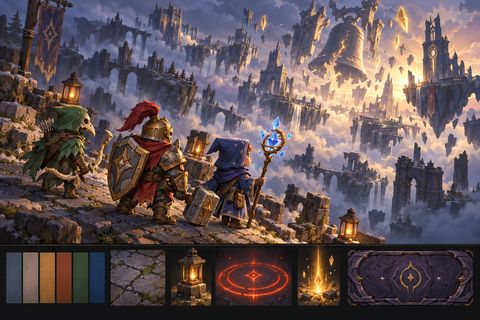<figcaption><b>Key art com os 3 heróis e uma faixa de estilo</b><br><span class="pil concluido"><i></i>Aprovada</span></figcaption></figure>
<figure class="" data-k="referencias">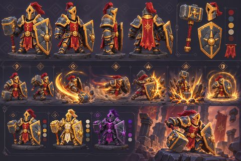<figcaption><b>Guerreiro</b>turnaround, poses de habilidade e skins<br><span class="pil concluido"><i></i>Aprovada</span></figcaption></figure>
<figure class="" data-k="referencias">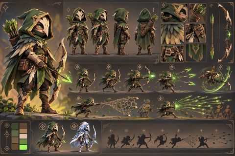<figcaption><b>Arqueiro</b>turnaround, poses de habilidade e skins<br><span class="pil concluido"><i></i>Aprovada</span></figcaption></figure>
<figure class="" data-k="referencias">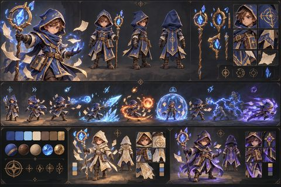<figcaption><b>Mago</b>turnaround, poses de habilidade e skins<br><span class="pil concluido"><i></i>Aprovada</span></figcaption></figure>
<figure class="" data-k="referencias">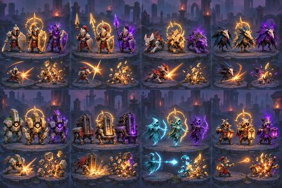<figcaption><b>8 inimigos do Ato I nas versões normal, elite e corrompida</b><br><span class="pil concluido"><i></i>Aprovada</span></figcaption></figure>
<figure class="" data-k="referencias">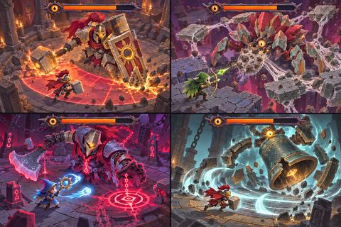<figcaption><b>Os 4 chefes do Ato I, cada um enfrentando um herói</b><br><span class="pil concluido"><i></i>Aprovada</span></figcaption></figure>
<figure class="" data-k="referencias">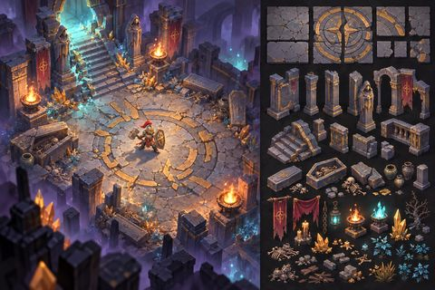<figcaption><b>Cripta Partida</b>arena com o Guerreiro e kit modular<br><span class="pil concluido"><i></i>Aprovada</span></figcaption></figure>
<figure class="" data-k="referencias">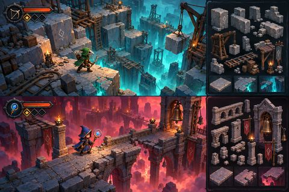<figcaption><b>Pedreira dos Ecos com o Arqueiro e Ponte do Sino com o Mago</b><br><span class="pil concluido"><i></i>Aprovada</span></figcaption></figure>
<figure class="" data-k="referencias">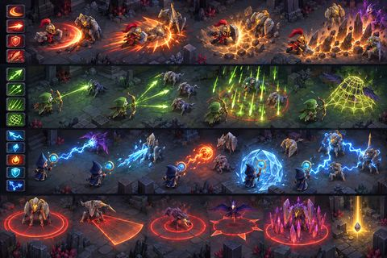<figcaption><b>Efeitos das habilidades das 3 classes contra inimigos do Ato I e os telegraphs dos inimigos</b><br><span class="pil concluido"><i></i>Aprovada</span></figcaption></figure>
<figure class="" data-k="referencias">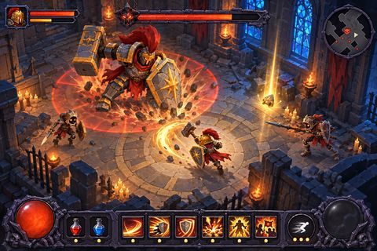<figcaption><b>HUD em combate</b>o Guerreiro contra o Guardião da Cripta<br><span class="pil concluido"><i></i>Aprovada</span></figcaption></figure>
<figure class="" data-k="referencias">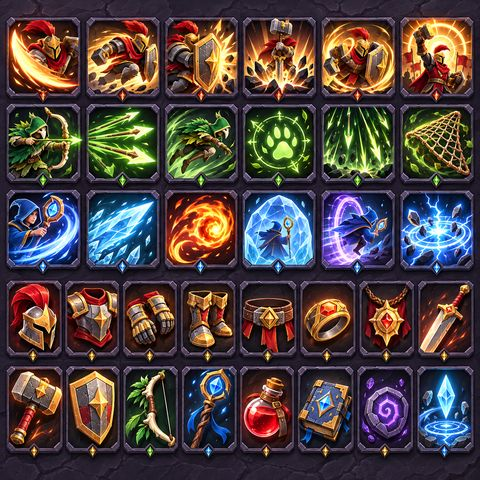<figcaption><b>Ícones de habilidades (com o herói de cada classe) e de itens</b><br><span class="pil concluido"><i></i>Aprovada</span></figcaption></figure>
<figure class="" data-k="referencias">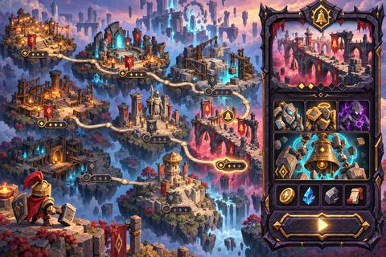<figcaption><b>Mapa do Ato I e seleção de área com o Vigia do Sino</b><br><span class="pil concluido"><i></i>Aprovada</span></figcaption></figure>
<figure class="" data-k="referencias">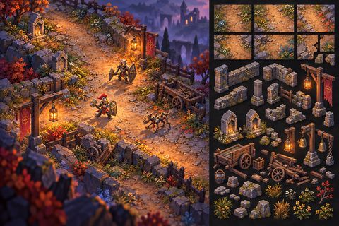<figcaption><b>Estrada das Lanternas (tutorial)</b>área com o Guerreiro e kit<br><span class="pil concluido"><i></i>Aprovada</span></figcaption></figure>
<figure class="" data-k="referencias">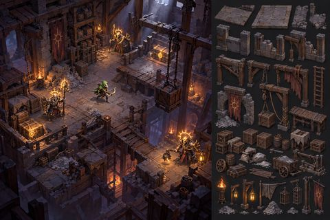<figcaption><b>Armazém de Cinzas (área opcional de saque)</b>área com o Arqueiro e kit<br><span class="pil concluido"><i></i>Aprovada</span></figcaption></figure>
<figure class="" data-k="referencias">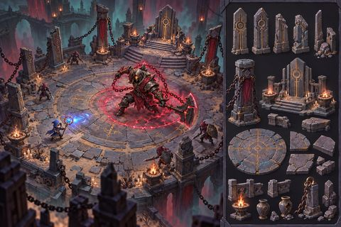<figcaption><b>Pátio dos Marcos</b>arena do Carrasco do Voto com o Mago e kit<br><span class="pil concluido"><i></i>Aprovada</span></figcaption></figure>
<figure class="" data-k="referencias">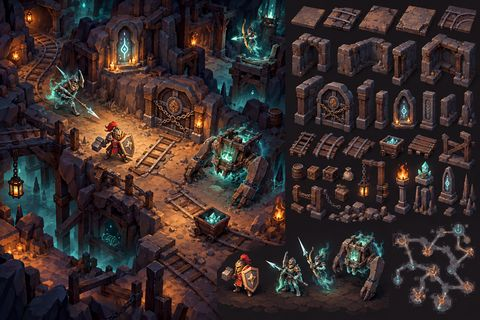<figcaption><b>Túneis do Voto</b>área com o Guerreiro, kit e planta da masmorra<br><span class="pil concluido"><i></i>Aprovada</span></figcaption></figure>
<figure class="" data-k="referencias">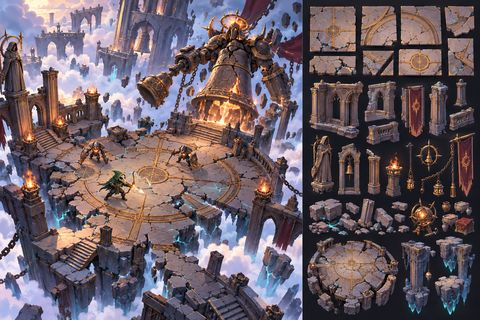<figcaption><b>Mirante Partido</b>arena final do Ato I com o Arqueiro e kit<br><span class="pil concluido"><i></i>Aprovada</span></figcaption></figure>
<figure class="" data-k="referencias">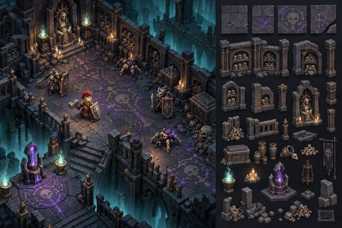<figcaption><b>Endgame, Ossário do Marco</b>área com o Guerreiro e kit<br><span class="pil concluido"><i></i>Aprovada</span></figcaption></figure>
<figure class="" data-k="referencias">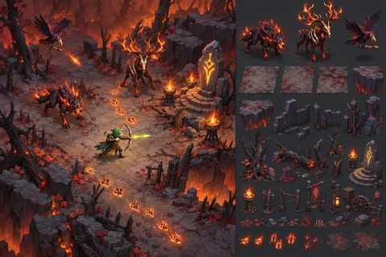<figcaption><b>Endgame, Trilha de Cinza</b>área com o Arqueiro, inimigos e kit<br><span class="pil concluido"><i></i>Aprovada</span></figcaption></figure>
<figure class="" data-k="referencias">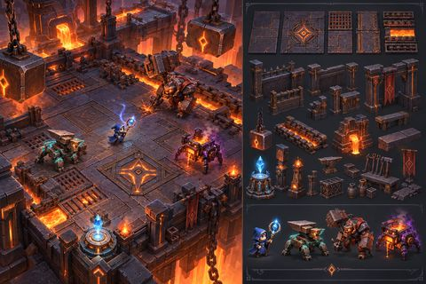<figcaption><b>Endgame, Salão do Martelo</b>área com o Mago, inimigos e kit<br><span class="pil concluido"><i></i>Aprovada</span></figcaption></figure>
<figure class="" data-k="referencias">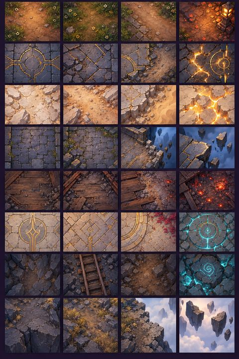<figcaption><b>Terrenos das 8 áreas do Ato I (4 texturas por área)</b><br><span class="pil concluido"><i></i>Aprovada</span></figcaption></figure>
<figure class="" data-k="referencias">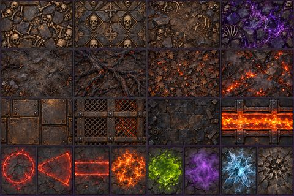<figcaption><b>Terrenos dos 3 mapas do endgame e marcas de perigo no chão</b><br><span class="pil concluido"><i></i>Aprovada</span></figcaption></figure>
<figure class="" data-k="referencias">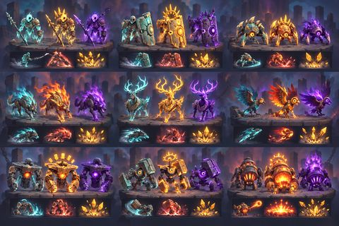<figcaption><b>9 inimigos do endgame (3 por mapa) nas versões normal, elite e corrompida</b><br><span class="pil concluido"><i></i>Aprovada</span></figcaption></figure>
<figure class="" data-k="referencias">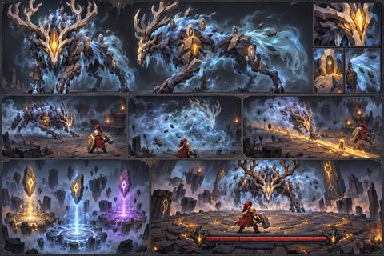<figcaption><b>Predador dos Marcos</b>vistas, fases, rastros e arena<br><span class="pil concluido"><i></i>Aprovada</span></figcaption></figure>
<figure class="" data-k="modelagem">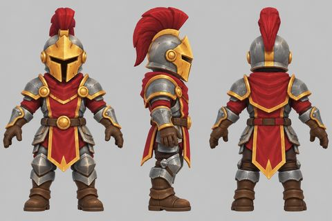<figcaption><b>Folha de modelagem: Guerreiro</b>Aprovada em 16/10. Base para o modelo 3D.<br><span class="pil concluido"><i></i>Aprovada</span></figcaption></figure>
<figure class="" data-k="modelagem">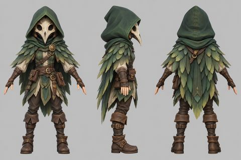<figcaption><b>Folha de modelagem: Arqueiro</b>Aprovada em 16/10. Base para o modelo 3D.<br><span class="pil concluido"><i></i>Aprovada</span></figcaption></figure>
<figure class="" data-k="modelagem">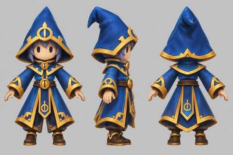<figcaption><b>Folha de modelagem: Mago</b>Aprovada em 16/10. Base para o modelo 3D.<br><span class="pil concluido"><i></i>Aprovada</span></figcaption></figure>
<figure class="" data-k="modelagem">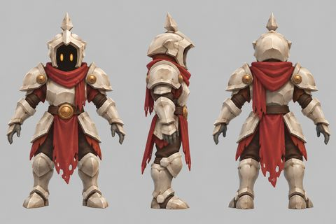<figcaption><b>Folha de modelagem: Sentinela Oca</b>Aprovada em 16/10. Base para o modelo 3D.<br><span class="pil concluido"><i></i>Aprovada</span></figcaption></figure>
<figure class="" data-k="modelagem">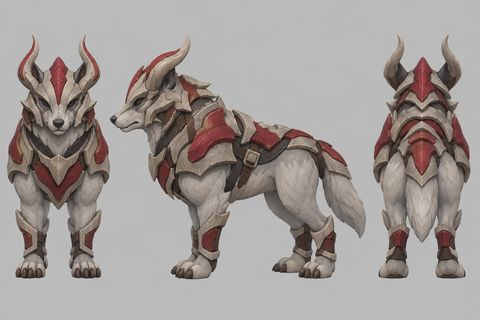<figcaption><b>Folha de modelagem: Cão-de-Cinza</b>Aprovada em 16/10. Base para o modelo 3D.<br><span class="pil concluido"><i></i>Aprovada</span></figcaption></figure>
<figure class="" data-k="modelagem">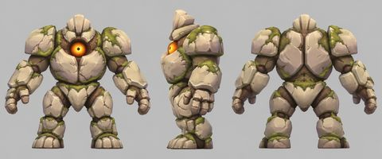<figcaption><b>Folha de modelagem: Arauto de Pedra</b>Aprovada em 16/10. Base para o modelo 3D.<br><span class="pil concluido"><i></i>Aprovada</span></figcaption></figure>
<figure class="" data-k="modelagem">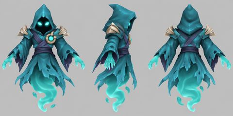<figcaption><b>Folha de modelagem: Arqueiro Espectral</b>Aprovada em 16/10. Base para o modelo 3D.<br><span class="pil concluido"><i></i>Aprovada</span></figcaption></figure>
<figure class="" data-k="modelagem">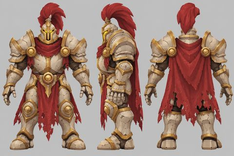<figcaption><b>Folha de modelagem: Guardião da Cripta</b>Aprovada em 16/10. Base para o modelo 3D.<br><span class="pil concluido"><i></i>Aprovada</span></figcaption></figure>
<figure class="" data-k="modelagem">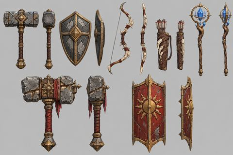<figcaption><b>Folha de modelagem: Armas</b>Aprovada em 16/10. Base para o modelo 3D.<br><span class="pil concluido"><i></i>Aprovada</span></figcaption></figure>
<figure class="" data-k="modulares">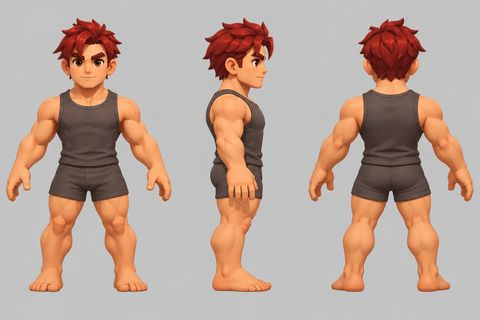<figcaption><b>Guerreiro, corpo base</b>Corpo base; rostos novos do Guerreiro e do Arqueiro.<br><span class="pil concluido"><i></i>Aprovada</span></figcaption></figure>
<figure class="" data-k="modulares">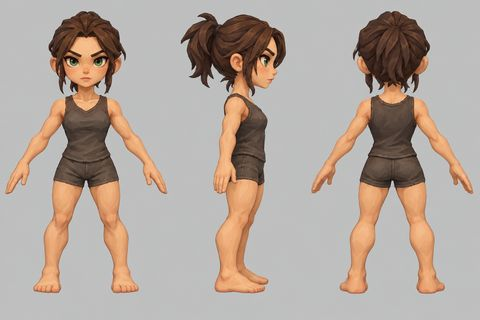<figcaption><b>Arqueiro, corpo base</b>Corpo base; rostos novos do Guerreiro e do Arqueiro.<br><span class="pil concluido"><i></i>Aprovada</span></figcaption></figure>
<figure class="" data-k="modulares">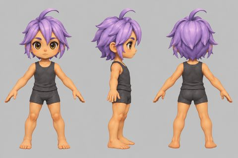<figcaption><b>Mago, corpo base</b>Corpo base; rostos novos do Guerreiro e do Arqueiro.<br><span class="pil concluido"><i></i>Aprovada</span></figcaption></figure>
<figure class="" data-k="modulares">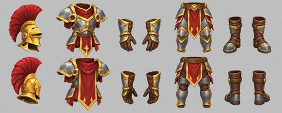<figcaption><b>Guerreiro, armadura inicial</b>Armadura inicial em 5 peças: elmo, peitoral, luvas, calça e botas.<br><span class="pil concluido"><i></i>Aprovada</span></figcaption></figure>
<figure class="" data-k="modulares">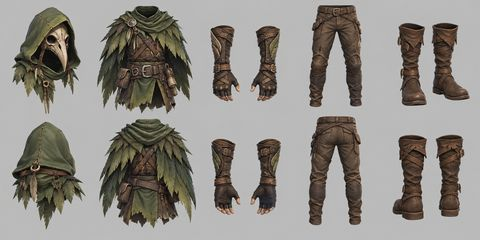<figcaption><b>Arqueiro, armadura inicial</b>Armadura inicial em 5 peças: elmo, peitoral, luvas, calça e botas.<br><span class="pil concluido"><i></i>Aprovada</span></figcaption></figure>
<figure class="" data-k="modulares">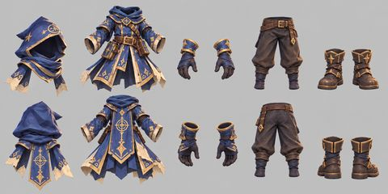<figcaption><b>Mago, armadura inicial</b>Armadura inicial em 5 peças: elmo, peitoral, luvas, calça e botas.<br><span class="pil concluido"><i></i>Aprovada</span></figcaption></figure>
<figure class="" data-k="cenario">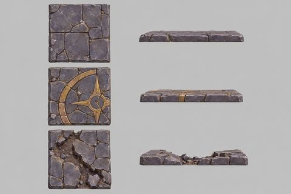<figcaption><b>Cripta: Pisos</b>Folha do cenário da Cripta, aprovada em 16/10.<br><span class="pil concluido"><i></i>Aprovada</span></figcaption></figure>
<figure class="" data-k="cenario">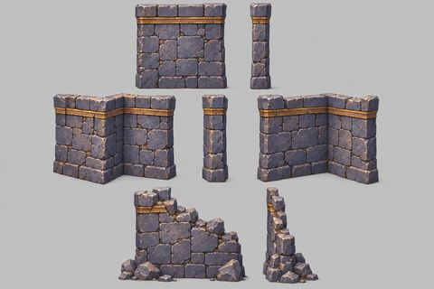<figcaption><b>Cripta: Paredes</b>Folha do cenário da Cripta, aprovada em 16/10.<br><span class="pil concluido"><i></i>Aprovada</span></figcaption></figure>
<figure class="" data-k="cenario">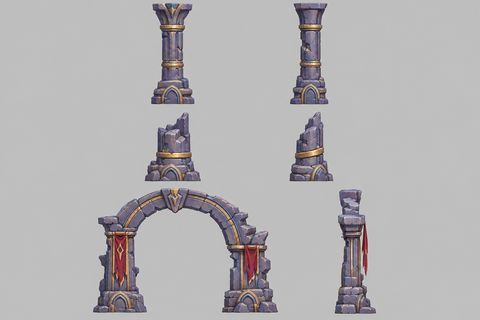<figcaption><b>Cripta: Pilar e arco</b>Folha do cenário da Cripta, aprovada em 16/10.<br><span class="pil concluido"><i></i>Aprovada</span></figcaption></figure>
<figure class="" data-k="cenario">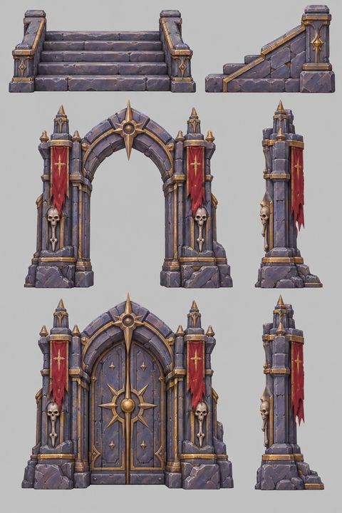<figcaption><b>Cripta: Escada e portal</b>Folha do cenário da Cripta, aprovada em 16/10.<br><span class="pil concluido"><i></i>Aprovada</span></figcaption></figure>
<figure class="" data-k="cenario">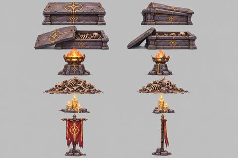<figcaption><b>Cripta: Decoração</b>Folha do cenário da Cripta, aprovada em 16/10.<br><span class="pil concluido"><i></i>Aprovada</span></figcaption></figure>
<figure class="" data-k="cenario">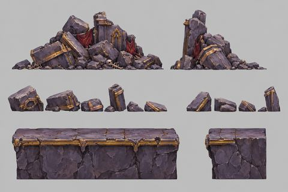<figcaption><b>Cripta: Entulho e abismo</b>Folha do cenário da Cripta, aprovada em 16/10.<br><span class="pil concluido"><i></i>Aprovada</span></figcaption></figure>
<figure class="" data-k="modelos3d">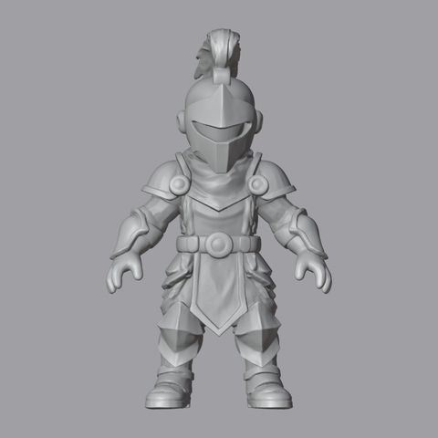<figcaption><b>Guerreiro 3D (frente)</b>Forma gerada pelo TripoSG a partir da folha aprovada. Ainda sem pintura nem esqueleto.<br><span class="pil concluido"><i></i>Aprovada</span></figcaption></figure>
<figure class="" data-k="modelos3d">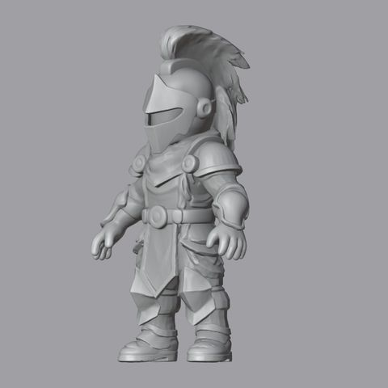<figcaption><b>Guerreiro 3D (três quartos)</b>Forma gerada pelo TripoSG a partir da folha aprovada. Ainda sem pintura nem esqueleto.<br><span class="pil concluido"><i></i>Aprovada</span></figcaption></figure>
<figure class="" data-k="modelos3d">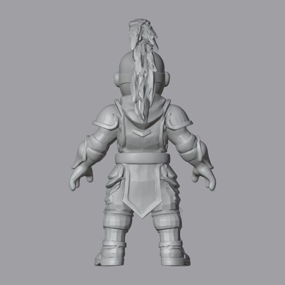<figcaption><b>Guerreiro 3D (costas)</b>Forma gerada pelo TripoSG a partir da folha aprovada. Ainda sem pintura nem esqueleto.<br><span class="pil concluido"><i></i>Aprovada</span></figcaption></figure>
<figure class="ag" data-k="graybox">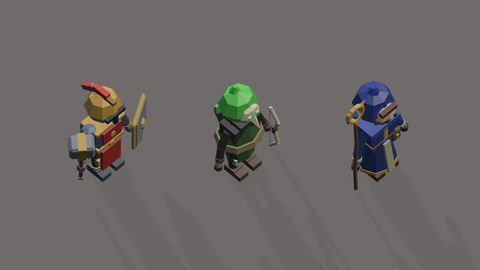<figcaption><b>Graybox: Heróis (fila)</b>Aprovado só como provisório.<br><span class="pil andamento"><i></i>Provisório</span></figcaption></figure>
<figure class="ag" data-k="graybox">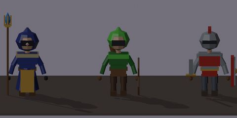<figcaption><b>Graybox: Heróis (frente)</b>Aprovado só como provisório.<br><span class="pil andamento"><i></i>Provisório</span></figcaption></figure>
<figure class="ag" data-k="graybox"><figcaption><b>Graybox: Inimigos</b>Aprovado só como provisório.<br><span class="pil andamento"><i></i>Provisório</span></figcaption></figure>
<figure class="ag" data-k="graybox"><figcaption><b>Graybox: Guardião da Cripta</b>Aprovado só como provisório.<br><span class="pil andamento"><i></i>Provisório</span></figcaption></figure>
<figure class="" data-k="modelos3d"><figcaption><b>Guerreiro final (frente)</b>Acabamento aprovado: 6 mil triângulos, pintado e com esqueleto.<br><span class="pil concluido"><i></i>Aprovada</span></figcaption></figure>
<figure class="" data-k="modelos3d"><figcaption><b>Guerreiro final (três quartos)</b>Acabamento aprovado: 6 mil triângulos, pintado e com esqueleto.<br><span class="pil concluido"><i></i>Aprovada</span></figcaption></figure>
<figure class="" data-k="modelos3d"><figcaption><b>Guerreiro final (costas)</b>Acabamento aprovado: 6 mil triângulos, pintado e com esqueleto.<br><span class="pil concluido"><i></i>Aprovada</span></figcaption></figure>
<figure class="" data-k="modelos3d"><figcaption><b>Guerreiro final (pose)</b>Acabamento aprovado: 6 mil triângulos, pintado e com esqueleto.<br><span class="pil concluido"><i></i>Aprovada</span></figcaption></figure>
<figure class="ag" data-k="nojogo"><figcaption><b>Cripta: entrada</b>Captura a 56 m. Em produção: paredes e Guardião ainda em graybox provisório.<br><span class="pil andamento"><i></i>Em produção</span></figcaption></figure>
<figure class="ag" data-k="nojogo"><figcaption><b>Cripta: primeiro encontro</b>Captura a 56 m. Em produção: paredes e Guardião ainda em graybox provisório.<br><span class="pil andamento"><i></i>Em produção</span></figcaption></figure>
<figure class="ag" data-k="nojogo"><figcaption><b>Cripta: arena do Guardião</b>Captura a 56 m. Em produção: paredes e Guardião ainda em graybox provisório.<br><span class="pil andamento"><i></i>Em produção</span></figcaption></figure>
<figure class="ag" data-k="nojogo"><figcaption><b>Guerreiro a 56 m</b>Captura a 56 m. Em produção: paredes e Guardião ainda em graybox provisório.<br><span class="pil andamento"><i></i>Em produção</span></figcaption></figure>
<figure class="" data-k="modelos3d"><figcaption><b>Prancha final dos modelos</b>Guerreiro refeito, Sentinela Oca, Arauto de Pedra, Arqueiro Espectral, Guardião e 6 armas, todos pintados e com esqueleto. Aprovada.<br><span class="pil concluido"><i></i>Aprovada</span></figcaption></figure>
<figure class="" data-k="modelos3d"><figcaption><b>Prancha de golpes (Blender)</b>Golpes feitos no Blender por script, sem IA. Aprovados para entrar no jogo.<br><span class="pil concluido"><i></i>Aprovada</span></figcaption></figure>
<figure class="ag" data-k="modelos3d"><figcaption><b>Heróis modulares cortados</b>Guerreiro e Arqueiro: corpo em 6 regiões mais 5 peças, cortados do modelo vestido aprovado. Integração na Unity em andamento.<br><span class="pil andamento"><i></i>Em produção</span></figcaption></figure>
<figure class="ag" data-k="nojogo"><figcaption><b>Cripta: arena do Guardião (modelos pintados)</b>Captura do jogo. Em produção: paredes e Guardião ainda em graybox provisório.<br><span class="pil andamento"><i></i>Em produção</span></figcaption></figure>
<figure class="ag" data-k="nojogo"><figcaption><b>Cripta: encontro de Sentinelas e Arqueiros</b>Captura do jogo. Em produção: paredes e Guardião ainda em graybox provisório.<br><span class="pil andamento"><i></i>Em produção</span></figcaption></figure>
<figure class="ag" data-k="nojogo"><figcaption><b>Animações no jogo (prancha 2)</b>Captura do jogo. Em produção: paredes e Guardião ainda em graybox provisório.<br><span class="pil andamento"><i></i>Em produção</span></figcaption></figure>
<figure class="ag" data-k="nojogo"><figcaption><b>Animações no jogo (prancha 3)</b>Captura do jogo. Em produção: paredes e Guardião ainda em graybox provisório.<br><span class="pil andamento"><i></i>Em produção</span></figcaption></figure>
<figure class="ag" data-k="aguardando"><figcaption><b>Telas da Etapa 3: prancha</b>Mockups das telas da Etapa 3. Aguardando sua aprovação.<br><span class="pil aguardando_dono"><i></i>Aguardando aprovação</span></figcaption></figure>
<figure class="ag" data-k="aguardando"><figcaption><b>Etapa 3: Tela inicial</b>Mockup aguardando sua aprovação.<br><span class="pil aguardando_dono"><i></i>Aguardando aprovação</span></figcaption></figure>
<figure class="ag" data-k="aguardando"><figcaption><b>Etapa 3: Inventário</b>Mockup aguardando sua aprovação.<br><span class="pil aguardando_dono"><i></i>Aguardando aprovação</span></figcaption></figure>
<figure class="ag" data-k="aguardando"><figcaption><b>Etapa 3: Comparação de item</b>Mockup aguardando sua aprovação.<br><span class="pil aguardando_dono"><i></i>Aguardando aprovação</span></figcaption></figure>
<figure class="ag" data-k="aguardando"><figcaption><b>Etapa 3: Expedição</b>Mockup aguardando sua aprovação.<br><span class="pil aguardando_dono"><i></i>Aguardando aprovação</span></figcaption></figure>
<figure class="ag" data-k="aguardando"><figcaption><b>Etapa 3: Relatório da expedição</b>Mockup aguardando sua aprovação.<br><span class="pil aguardando_dono"><i></i>Aguardando aprovação</span></figcaption></figure>
<figure class="ag" data-k="nojogo"><figcaption><b>Capturas do jogo rodando</b>Captura do build. Em produção.<br><span class="pil andamento"><i></i>Em produção</span></figcaption></figure>
<figure class="ag" data-k="nojogo"><figcaption><b>Guerreiro modular de perto</b>Captura do build. Em produção.<br><span class="pil andamento"><i></i>Em produção</span></figcaption></figure>
<figure class="ag" data-k="nojogo"><figcaption><b>Os três heróis no jogo</b>Captura do build. Em produção.<br><span class="pil andamento"><i></i>Em produção</span></figcaption></figure>
<figure class="ag" data-k="modelos3d"><figcaption><b>Lote 3: Cão, arco, Mago vestido e modular</b>Derivado de arte aprovada. Em produção.<br><span class="pil andamento"><i></i>Em produção</span></figcaption></figure>
<figure class="ag" data-k="modelos3d"><figcaption><b>Kit do cenário pintado</b>Derivado de arte aprovada. Em produção.<br><span class="pil andamento"><i></i>Em produção</span></figcaption></figure>
<figure class="ag" data-k="nojogo"><figcaption><b>Inventário no jogo</b>Tela de inventário (tecla I), boneco modular, tooltip com comparação e loot no chão. Em produção.<br><span class="pil andamento"><i></i>Em produção</span></figcaption></figure>
</div>
<h2>Sessões na nuvem</h2><div class='grade'>
<article class="card"><header><h3>1. Revisão do ShatterCore da Etapa 2 (Linux)</h3><span class="pil nuvem"><i></i>Na nuvem</span></header><p class="mut peq">Backend - iniciada em 17/10/2026</p><p>Relatório no docs/17.</p><p class="prox"><b>Resultado:</b> Concluída: achados críticos e altos corrigidos; CI do GitHub verde de novo.</p></article>
</div>
<h2>Infraestrutura</h2><div class='tab'><table><tr><th>Item</th><th>Detalhe</th></tr>
<tr><td>Unity 6.3 LTS (6000.3.26f1)</td><td>D:\Unity\Editors, com módulo IL2CPP</td></tr>
<tr><td>Unity CLI</td><td>D:\Unity\cli</td></tr>
<tr><td>Licença Unity Personal</td><td>ativa</td></tr>
<tr><td>Projeto URP</td><td>EchoesOfTheShatter/, com o pacote Pipeline</td></tr>
<tr><td>Plugin da Unity no Claude Code</td><td>instalado</td></tr>
<tr><td>Repositório privado no GitHub</td><td>github.com/Willvinicius2/echoes-of-the-shatter, com Git LFS</td></tr>
<tr><td>Visual Studio Build Tools</td><td>MSVC 14.50</td></tr>
<tr><td>Blender 5.1</td><td>graybox e arte técnica</td></tr>
<tr><td>TripoSG (licença MIT)</td><td>Geração de modelos 3D a partir das folhas aprovadas</td></tr>
<tr><td>CI do núcleo</td><td>.github/workflows/core.yml e manual.yml</td></tr>
<tr><td>Roteiro do sócio (Artifact)</td><td>https://claude.ai/artifact/5G5WBocgrp8NAeLKiF9FP8</td></tr>
<tr><td>Build jogável v0.1</td><td>D:\openclaude\Builds\Echoes_Cripta_dev\EchoesOfTheShatter.exe (110 MB), com LEIA-ME.txt</td></tr>
<tr><td>Desempenho medido</td><td>Cerca de 1 ms por quadro numa RTX 4060 Ti (não é o PC de entrada)</td></tr>
</table></div></main>
<script>
(function(){var b=document.querySelectorAll('.abas button'),f=document.querySelectorAll('.gal figure');
b.forEach(function(x){x.addEventListener('click',function(){var k=x.dataset.f;
b.forEach(function(y){y.setAttribute('aria-pressed',y===x)});
f.forEach(function(g){g.hidden=!(k==='todas'||g.dataset.k===k)})})})})();
</script>
<script type="application/json" id="votacao-dados">[{"id": "capsulas-steam", "opcoes": [{"id": "A", "nome": "A. Artista contratado", "efeito": "Segue a política do plano e evita críticas a cápsula feita por IA. Tem custo e prazo, e exige contrato de cessão de direitos com o artista."}, {"id": "B", "nome": "B. IA declarada", "efeito": "Rápido, barato e coerente com o resto da arte. Parte do público reage mal a cápsulas feitas por IA."}, {"id": "C", "nome": "C. Mista", "efeito": "IA para compor a cena e artista pintando por cima. Custo intermediário; o uso de IA continua tendo de ser declarado."}]}, {"id": "registros-quem", "opcoes": [{"id": "A", "nome": "A. Você cuida de tudo", "efeito": "Concentra as decisões, mas divide seu tempo com a produção do jogo."}, {"id": "B", "nome": "B. Seu sócio assume a parte burocrática", "efeito": "Você acompanha a produção e ele toca CNPJ, Steam e registros."}, {"id": "C", "nome": "C. Contador e advogado", "efeito": "Contador para CNPJ e impostos; advogado só para marca e contratos. Tem custo, mas reduz o risco de erro."}]}, {"id": "registros-quando", "opcoes": [{"id": "A", "nome": "A. Começar já", "efeito": "A página entra no ar mais cedo e as wishlists se acumulam por mais tempo. O gasto com CNPJ e Steam Direct vem antes de haver jogo pronto."}, {"id": "B", "nome": "B. Junto com a demo", "efeito": "Segue o plano: CNPJ e conta na Steam no começo da fase da demo, com a página no ar antes do Next Fest. Depende da decisão sobre a demo."}, {"id": "C", "nome": "C. Só na etapa 5", "efeito": "Adia o gasto e a burocracia para quando o jogo estiver quase pronto. A página entra tarde e o lançamento sai com menos wishlists."}]}, {"id": "paginacao-windows", "opcoes": [{"id": "A", "nome": "A. Tudo para o D:", "efeito": "Libera todo o espaço do arquivo no C:. O D: precisa ter espaço livre sobrando."}, {"id": "B", "nome": "B. Pequeno no C: e o resto no D:", "efeito": "Deixa 2 a 4 GB no C: (o Windows usa para relatórios de travamento) e coloca o principal no D:."}, {"id": "C", "nome": "C. Não mexer agora", "efeito": "Libera espaço no C: de outra forma. O risco de travar por falta de memória continua."}]}, {"id": "afixos-arma", "opcoes": [{"id": "A", "nome": "A. Criar 2 afixos de arma agora (recomendado)", "efeito": "Reforjar e Adicionar afixo viram escolhas reais na arma. Custa 2 linhas de dados e 2 textos."}, {"id": "B", "nome": "B. Aceitar a limitação", "efeito": "Nada novo nos dados; a arma só melhora por Lapidar e o Encantador fica pobre para quem foca em arma."}]}, {"id": "reforjar-desfazer", "opcoes": [{"id": "A", "nome": "A. Sem desfazer, com trava e aviso (recomendado)", "efeito": "A decisão pesa, a trava dá controle e o save não ganha estado novo."}, {"id": "B", "nome": "B. Desfazer o último Reforjar de graça", "efeito": "Menos medo, mas o jogador reforja e desfaz até acertar, o que quebra o custo crescente."}, {"id": "C", "nome": "C. Desfazer pagando metade do custo", "efeito": "Meio-termo; ainda guarda o estado anterior no item e pede regra de custo e tela."}]}]</script>
<script>/* Votação e comentários por pergunta, gravados no banco do artifact.
 * Um documento por pessoa em votos/<id>, com respostas[<id da pergunta>] = {opcao, comentario, em}.
 * A página traz <script type="application/json" id="votacao-dados"> com [{id, opcoes: [{id, nome, efeito}]}]
 * e um <div class="votacao" data-q="<id da pergunta>"> onde cada pergunta deve aparecer.
 * Capabilities do artifact: db (regras em tools/votacao/README.md) e user com scope "profile". */
(function () {
  const dadosEl = document.getElementById('votacao-dados');
  if (!dadosEl) return;
  const PERGUNTAS = JSON.parse(dadosEl.textContent);
  const porId = Object.fromEntries(PERGUNTAS.map(p => [p.id, p]));
  const V = {db: null, user: null, eu: null, pode: false, votos: {}, meu: {}, fila: Promise.resolve(), salvando: false, aviso: 'Carregando votos…'};

  const el = (tag, cls, txt) => { const n = document.createElement(tag); if (cls) n.className = cls; if (txt != null) n.textContent = txt; return n; };
  const nomeOpcao = (q, o) => (porId[q]?.opcoes || []).find(x => x.id === o)?.nome || o;
  const quando = iso => { const d = new Date(iso); return isNaN(d) ? '' : d.toLocaleDateString('pt-BR', {day: '2-digit', month: '2-digit'}) + ' ' + d.toLocaleTimeString('pt-BR', {hour: '2-digit', minute: '2-digit'}); };

  function montar(caixa) {
    const q = caixa.dataset.q, p = porId[q];
    if (!p) return;
    const ul = el('ul', 'v-opcoes');
    for (const o of p.opcoes || []) {
      const b = el('button', 'v-op'); b.type = 'button'; b.dataset.q = q; b.dataset.o = o.id; b.setAttribute('aria-pressed', 'false');
      const quem = el('span', 'v-quem'); quem.append(el('span', 'v-n', '0 votos'), el('span', 'v-rostos'));
      b.append(el('b', null, o.nome), el('span', 'v-ef', o.efeito || ''), quem);
      const li = el('li'); li.append(b); ul.append(li);
    }
    const conversa = el('div', 'v-conversa');
    const ta = el('textarea', 'v-meu'); ta.id = 'vc-' + q; ta.rows = 2; ta.dataset.q = q;
    ta.placeholder = 'Explique seu voto, faça uma pergunta ou sugira outra opção';
    const rot = el('label', 'v-rotulo', 'Seu comentário'); rot.htmlFor = ta.id;
    const salvarBtn = el('button', 'v-salvar', 'Salvar comentário'); salvarBtn.type = 'button'; salvarBtn.dataset.q = q;
    const st = el('span', 'v-status'); st.setAttribute('role', 'status'); st.setAttribute('aria-live', 'polite');
    const acoes = el('div', 'v-acoes'); acoes.append(salvarBtn, st);
    conversa.append(el('h4', 'v-tit', 'Comentários'), el('ul', 'v-coms'), rot, ta, acoes);
    caixa.replaceChildren(el('h4', 'v-tit', 'Opções · clique para votar'), ul, conversa);
  }

  async function pintar() {
    const ids = Object.keys(V.votos);
    const ps = V.user && ids.length ? await V.user.profiles(ids) : {};
    const nome = id => id === V.eu ? 'Você' : (ps[id]?.name || 'Alguém');
    const rosto = id => { const i = el('img', 'v-rosto'); i.src = ps[id]?.avatarUrl || ''; i.alt = ''; i.title = nome(id); return i; };
    document.querySelectorAll('.v-op').forEach(b => {
      const {q, o} = b.dataset;
      const quem = ids.filter(id => V.votos[id]?.[q]?.opcao === o);
      b.setAttribute('aria-pressed', String(V.meu[q]?.opcao === o));
      b.classList.toggle('v-bloq', !V.pode);
      b.querySelector('.v-n').textContent = quem.length === 1 ? '1 voto' : quem.length + ' votos';
      b.querySelector('.v-rostos').replaceChildren(...quem.map(rosto));
    });
    document.querySelectorAll('.votacao').forEach(cx => {
      const q = cx.dataset.q, lista = cx.querySelector('.v-coms');
      if (!lista) return;
      const coms = ids.filter(id => (V.votos[id]?.[q]?.comentario || '').trim())
        .sort((a, b) => String(V.votos[a][q].em || '').localeCompare(String(V.votos[b][q].em || '')));
      lista.replaceChildren(...coms.map(id => {
        const r = V.votos[id][q], li = el('li'), cab = el('div', 'v-cab');
        cab.append(rosto(id), el('b', null, nome(id)), el('span', null, (r.opcao ? 'votou ' + nomeOpcao(q, r.opcao) + ' · ' : '') + quando(r.em)));
        li.append(cab, el('p', null, r.comentario));
        return li;
      }));
      if (!coms.length) lista.append(el('li', 'v-vazio', 'Nenhum comentário ainda.'));
      const ta = cx.querySelector('.v-meu');
      if (!ta.dataset.mexido && document.activeElement !== ta) ta.value = V.meu[q]?.comentario || '';
      ta.disabled = cx.querySelector('.v-salvar').disabled = !V.pode;
      const st = cx.querySelector('.v-status');
      if (!st.dataset.fixo) st.textContent = V.aviso;
    });
  }

  function salvar(q, msgOk) {
    const st = document.querySelector('.votacao[data-q="' + q + '"] .v-status');
    const r = V.meu[q];
    if (r) { r.em = new Date().toISOString(); if (!r.opcao && !(r.comentario || '').trim()) delete V.meu[q]; }
    const corpo = {respostas: JSON.parse(JSON.stringify(V.meu))};
    V.salvando = true;
    if (st) { st.dataset.fixo = '1'; st.textContent = 'Salvando…'; }
    V.fila = V.fila.then(async () => {
      try {
        await V.db.doc('votos/' + V.eu).set(corpo);
        if (st) st.textContent = msgOk;
      } catch (e) {
        if (e?.code === 'invalid_argument') { V.pode = false; V.aviso = 'Seu acesso não permite votar. Peça ao dono um convite de Editor por e-mail.'; }
        if (st) st.textContent = e?.code === 'quota_exceeded' ? 'O espaço de votos encheu. Avise o dono.'
          : e?.code === 'invalid_argument' ? V.aviso : 'Não foi possível salvar. Tente de novo.';
      } finally { V.salvando = false; pintar(); }
    });
  }

  document.addEventListener('click', e => {
    const b = e.target.closest('.v-op');
    if (b) {
      const {q, o} = b.dataset;
      if (!V.pode) {
        const st = document.querySelector('.votacao[data-q="' + q + '"] .v-status');
        if (st) { st.dataset.fixo = '1'; st.textContent = V.aviso; }
        return;
      }
      const r = V.meu[q] || (V.meu[q] = {});
      r.opcao = r.opcao === o ? '' : o;
      pintar();
      salvar(q, r.opcao ? 'Voto salvo.' : 'Voto retirado.');
      return;
    }
    const s = e.target.closest('.v-salvar');
    if (s && V.pode) {
      const q = s.dataset.q, ta = document.querySelector('.v-meu[data-q="' + q + '"]');
      const r = V.meu[q] || (V.meu[q] = {});
      r.comentario = ta.value.trim().slice(0, 4000);
      delete ta.dataset.mexido;
      salvar(q, r.comentario ? 'Comentário salvo.' : 'Comentário apagado.');
    }
  });
  document.addEventListener('input', e => { if (e.target.classList?.contains('v-meu')) e.target.dataset.mexido = '1'; });

  async function iniciar() {
    document.querySelectorAll('.votacao').forEach(montar);
    const c = window.claude;
    if (!c || typeof c.use !== 'function') { V.aviso = 'Abra esta página pelo link do claude.ai para votar e comentar.'; return pintar(); }
    [V.user, V.db] = await Promise.all([c.use('user'), c.use('db')]);
    if (!V.db) { V.aviso = 'Para votar e comentar, entre no claude.ai com o convite de Editor que o dono enviou por e-mail.'; return pintar(); }
    V.eu = V.user ? await V.user.id() : null;
    const pode = V.user ? await V.user.can('data.write') : null;
    V.pode = !!V.eu && pode !== false;
    V.aviso = V.pode ? '' : 'Você pode ver os votos, mas não votar. Para votar, peça ao dono um convite de Editor por e-mail.';
    V.db.collection('votos').onSnapshot(snap => {
      const novo = {};
      for (const d of snap.docs) { const r = d.data()?.respostas; if (r && typeof r === 'object') novo[d.id] = r; }
      V.votos = novo;
      if (V.eu && !V.salvando) V.meu = JSON.parse(JSON.stringify(novo[V.eu] || {}));
      pintar();
    }, () => { V.aviso = 'Não foi possível carregar os votos agora. Recarregue a página.'; pintar(); });
  }
  iniciar();
})();
</script>